데드락·라이브락과 락 전략
데드락과 라이브락은 프로세스 상태로 구분해요
발표자는 "데드락은 데드니까 죽는 거, 라이브락은 살아 있는데 락이 걸린 거"처럼 이름으로 답하면 탈락 시그널이라고 해요. 자원과 프로세스 상태로 설명해야 해요. 슬라이드는 이걸 좁은 길 비유 두 칸으로 보여 줘요. 왼쪽은 골목에서 정면으로 마주친 차 두 대가 "안 비켜"라며 멈춰 있는 데드락이고, 오른쪽은 복도에서 서로 비켜 주다 계속 같은 쪽으로 움직이는 라이브락이에요.
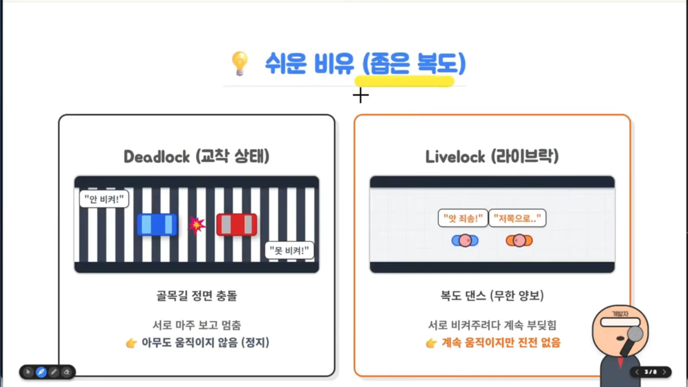
기술적인 차이는 CPU(Central Processing Unit) 사용률에서 드러나요. 아래 슬라이드 왼쪽의 데드락은 상태가 Blocked/Waiting이고 CPU 사용률이 거의 없어요(Idle). 오른쪽 라이브락은 상태가 Running이고 CPU 막대가 High까지 차 있어요. 실패한 작업을 계속 재시도하거나 상태를 바꾸느라 바쁘기 때문이에요. 발표자는 그래서 라이브락이 더 찾기 어렵고 무서울 수 있다고 해요.
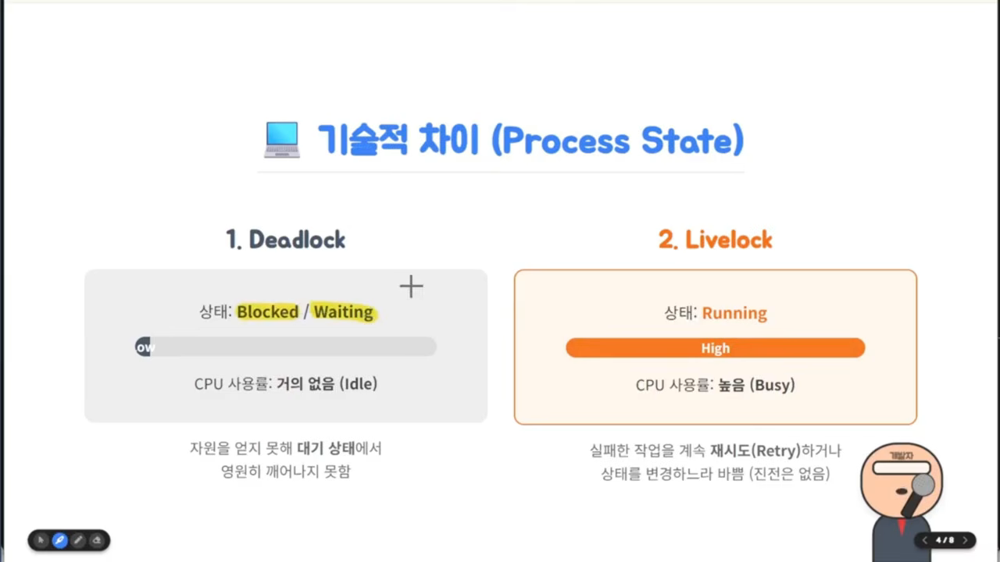
코드 예시는 둘 다 자원 순서가 엇갈린 상황이에요. 왼쪽 데드락 예시에서 트랜잭션 A는 Table_A를 잠근 뒤 Table_B를 기다리고, 트랜잭션 B는 Table_B를 잠근 뒤 Table_A를 기다려요. 오른쪽 라이브락 예시는 while(true) 안에서 락 1을 잡고, 락 2를 못 얻으면 자기 락을 즉시 풀고 처음으로 돌아가는 코드가 두 개 나란히 있어요. 둘이 같은 박자로 풀고 잡기를 반복하면 영원히 진척이 없어요.
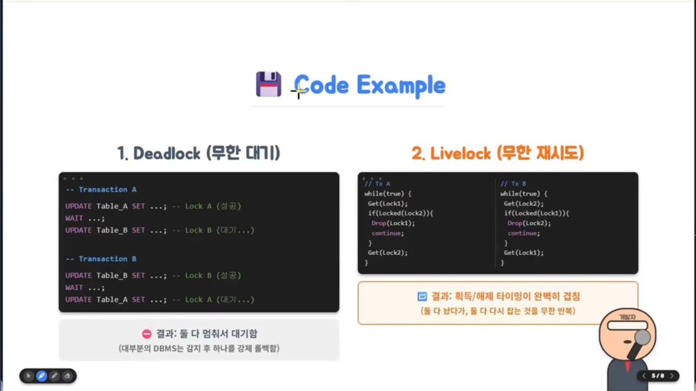
해결책 표에서 데드락 쪽은 자원 순서 정렬, 교착 감지 후 하나 강제 종료, 타임아웃 세 가지예요. 요즘 DBMS(Database Management System)는 감지와 강제 롤백을 자동으로 해 줘요. 라이브락은 순서를 맞출 수 없는 분산 환경이나 네트워크에서 생기니, 바로 재시도하지 않고 임의 시간을 기다리는 Random Backoff와 재시도 횟수 제한을 써요. 슬라이드 괄호에 적힌 대로 이더넷도 충돌이 나면 같은 방식으로 재전송해요.
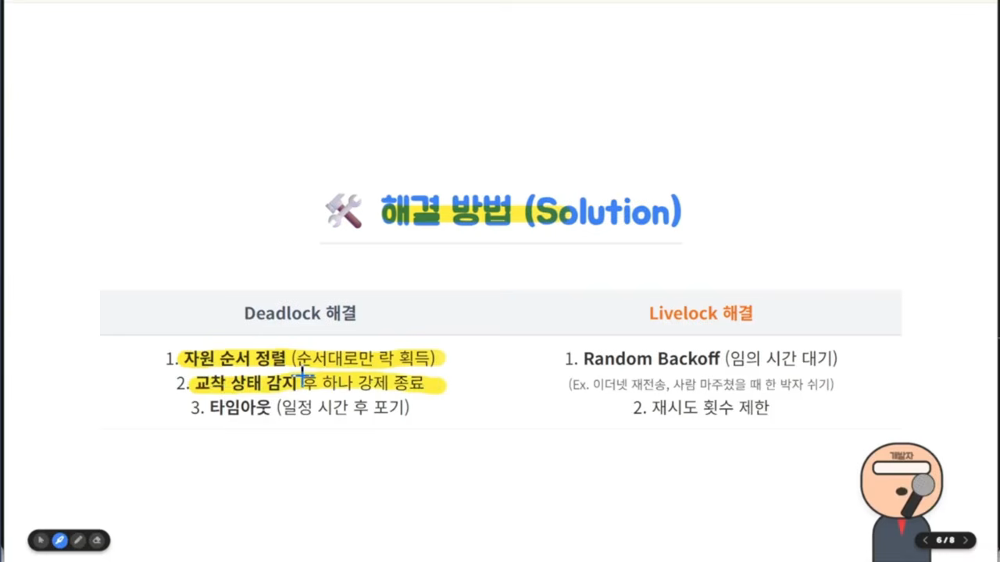
비관적 락과 낙관적 락
락이 없으면 무슨 일이 생기는지부터 봐요. 슬라이드 가운데 "잔고: 100만원"을 A와 B가 동시에 읽고, A는 50만 원, B는 10만 원을 넣어요. B가 저장하는 순간 A의 결과를 덮어써서 아래 빨간 글씨처럼 160만 원이 아니라 110만 원이 남아요. A의 입금이 사라지는 이 현상을 로스트 업데이트라고 해요.
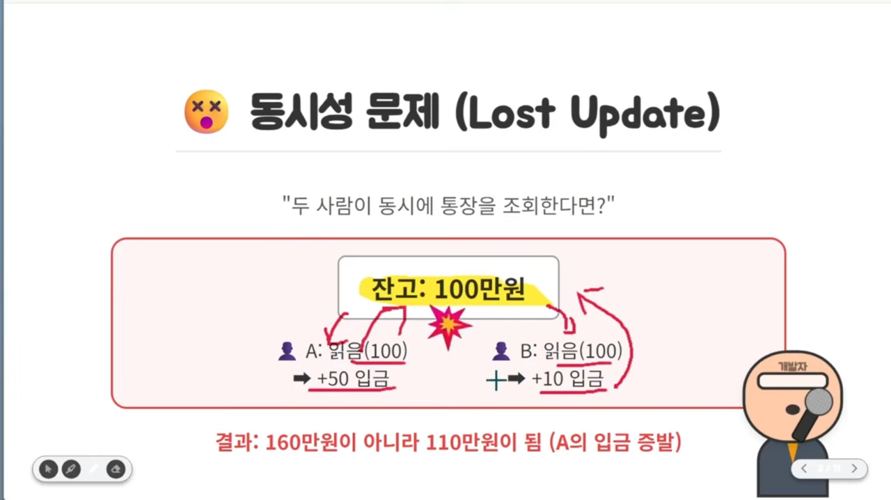
비관적 락은 "분명히 누가 동시에 들어올 거야"라고 보고 먼저 잠가요. 공용 화장실 문을 잠그고 들어가는 것과 같아요. SELECT ... FOR UPDATE로 읽으면서 락을 걸면 트랜잭션이 끝날 때까지 아무도 그 행을 못 건드려요. 낙관적 락은 Git 충돌처럼 일단 각자 작업하고 저장할 때 버전을 확인해요. 아래 코드가 그 방식이에요. WHERE id = 1 AND ver = 1 조건을 걸고 ver = 2로 올리는데, 그 사이 누가 먼저 고쳤다면 조건이 안 맞아 바뀐 행 수(RowCount)가 0이 돼요. 그러면 실패로 보고 재시도해요.
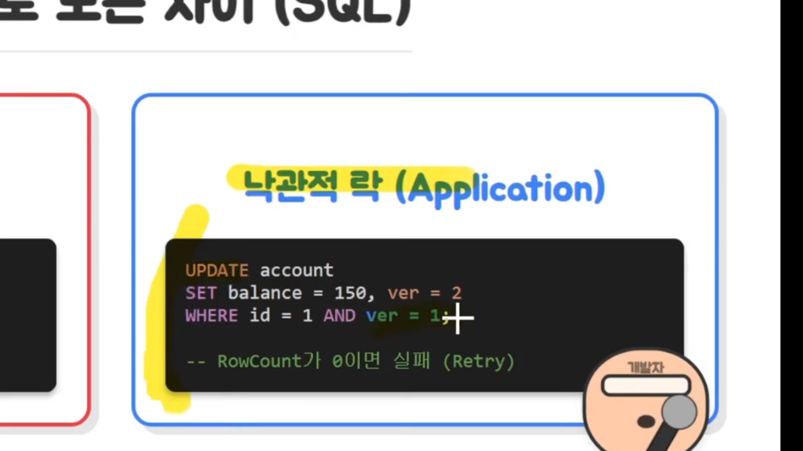
비교표는 네 줄이에요. 비관적 락은 DB 락(Shared/Exclusive)을 쓰고, 대기가 생겨 느리지만 충돌 시 기다렸다 안전하게 처리해요. 충돌이 잦은 경우에 맞아요. 낙관적 락은 버전으로 애플리케이션에서 처리하고, 락이 없어 빠르지만 충돌하면 실패 후 재시도라는 뒤처리가 필요해요. 충돌이 드문 경우에 맞아요.
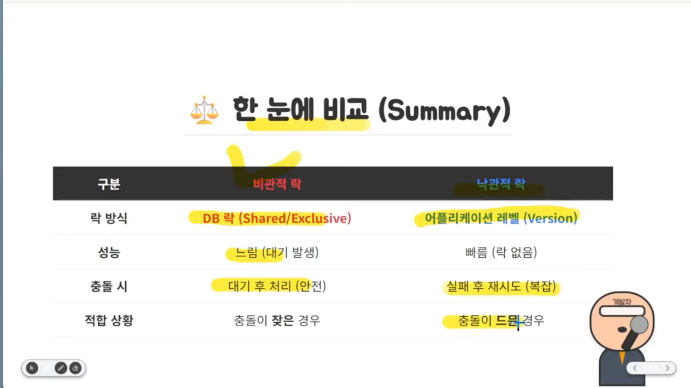
실무 선택 슬라이드는 네 칸이에요. 위 두 빨간 칸(계좌 이체·재고 차감처럼 정합성이 목숨보다 중요할 때, 선착순 이벤트처럼 충돌이 매우 잦을 때)은 비관적 락, 아래 두 파란 칸(게시글 수정·수강신청처럼 성능이 중요하고 충돌이 적을 때, 위키 편집·관리자 페이지처럼 조회와 수정 사이 텀이 길 때)은 낙관적 락이에요.
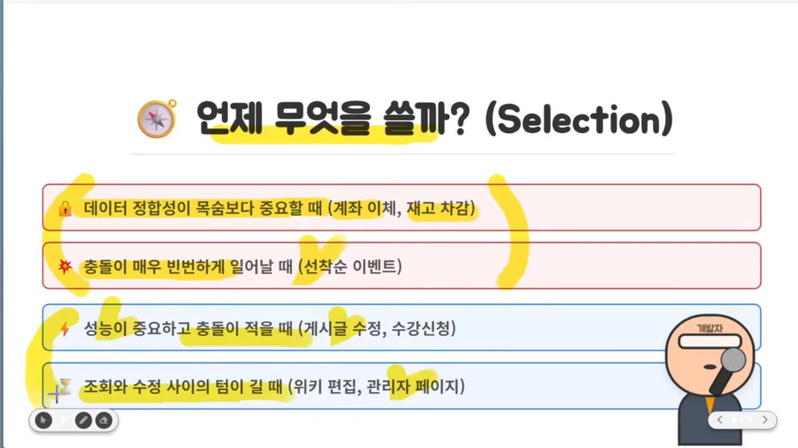
WHERE 없는 UPDATE 한 줄이 전체 유저를 튕겨 낸 사고
세 번째 편은 발표자의 실제 실수담이에요. 약 20년 전 게임 서비스를 운영하던 중, 회원 테이블을 정리하려고 운영 DB에 UPDATE를 날렸어요. 슬라이드 코드처럼 UPDATE user_members SET cash = 0인데 WHERE 절이 없었어요. 실행 직후 모니터링 대시보드에 경고가 뜨기 시작했다고 해요.
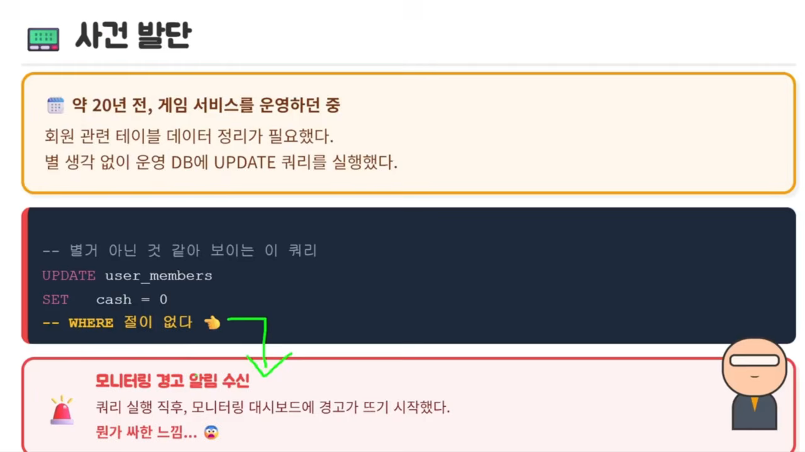
WHERE가 없었다는 점이라고 해요. 영상 15:20에서 보기원인 분석 첫 장은 WHERE가 있을 때와 없을 때를 나란히 놓아요. 왼쪽 초록 박스는 WHERE user_id = 1001이 있어서 인덱스로 해당 행만 찾고 그 행에만 락을 걸어요. 오른쪽 빨간 박스는 인덱스를 탈 조건이 없으니 첫 행부터 끝까지 풀스캔하며 모든 행에 락을 걸어요.
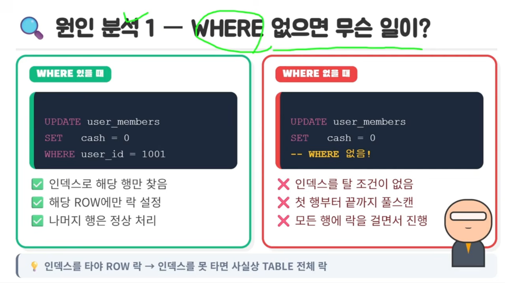
두 번째 장은 로우 락과 테이블 락 비교표예요. 로우 락은 특정 행만 잠그고 다른 행은 접근할 수 있어요. 테이블 락은 테이블 전체를 잠가서 쓰기 접근이 막혀요(SELECT는 MVCC(Multi-Version Concurrency Control)로 가능). 맨 아래 "당시 사건" 줄이 테이블 락 쪽을 가리켜요. 하단 노트는 InnoDB가 로우 락이 기본이지만 인덱스 없이 전체를 스캔하면 테이블 락과 똑같이 동작한다고 적고 있어요.
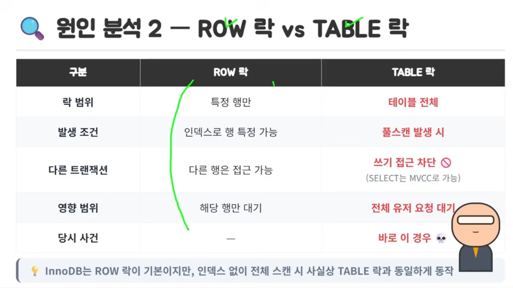
세 번째 장은 사고가 번진 순서를 화살표로 그려요. WHERE 없는 UPDATE 실행 → 풀스캔으로 전체 락 획득 → 대기 큐 폭발 → 락 대기 타임아웃 → 전원 튕김이에요. 아래 검은 박스에는 아이템 구매, 경험치 획득, 로그인 처리가 모두 user_members에 접근하려다 "대기"에 걸린 모습이 있어요.
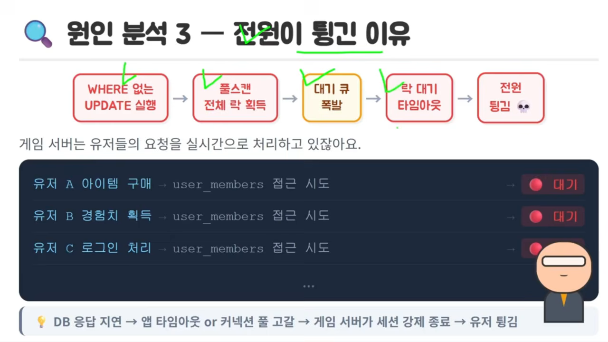
사건 뒤 바뀐 습관 다섯 가지가 마지막 장이에요. 위 두 빨간 줄은 버린 습관으로, 운영 DB에 직접 쿼리 날리기와 WHERE 없는 UPDATE/DELETE예요. 아래 세 초록 줄은 새 습관으로, 실행 전 같은 WHERE로 SELECT해 영향 범위 확인하기, 대량 업데이트는 LIMIT으로 나눠 처리하기, 트랜잭션은 짧게 유지하기예요.
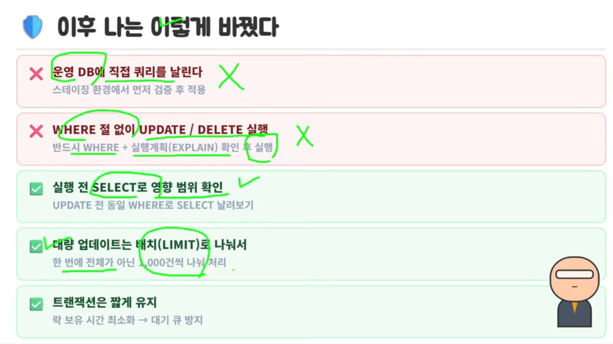
트랜잭션 격리 수준
면접 질문은 "격리 수준이 무엇이고, 왜 가장 안전한 Serializable로 두지 않나요?"예요. 모든 요청을 한 줄로 세우면 데이터는 완벽하지만 서비스가 마비되고, 아무 제약 없이 열어 두면 빠르지만 데이터가 엉망이 돼요. 격리 수준은 동시성과 일관성 사이에서 이 균형점을 고르는 설정이에요. 정의하자면, 여러 트랜잭션이 동시에 돌 때 다른 트랜잭션의 변경을 어디까지 보이게 할지 정하는 거예요.
격리가 약할 때 생기는 세 가지 현상
슬라이드의 빨간 카드 세 장이 ANSI(American National Standards Institute) 기준 "3대 괴담"이에요. 1번 Dirty Read는 남이 커밋도 안 한(롤백할 수도 있는) 데이터를 미리 읽는 거예요. 2번 Non-repeatable Read는 같은 조회를 두 번 했는데 그 사이 남이 수정·커밋해서 결과가 달라지는 거예요. 3번 Phantom Read는 범위 조회를 다시 했더니 그 사이 남이 삽입한 행이 귀신처럼 나타나는 거예요.
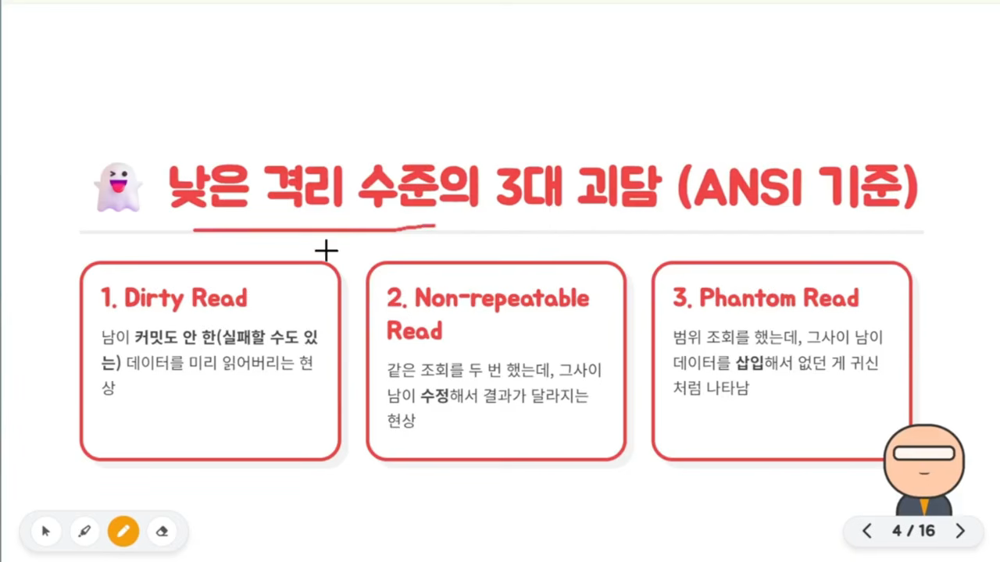
Read Uncommitted와 Read Committed
가장 낮은 Read Uncommitted는 사실상 격리를 안 하는 단계예요. 타임라인을 보면 T1에서 트랜잭션 1이 잔액을 50으로 바꾸는 중(커밋 전)인데, T2에서 트랜잭션 2가 그 50만 원을 읽어요. T3에서 트랜잭션 1이 서버 오류로 롤백하면 실제 잔액은 0원이에요. 트랜잭션 2는 존재하지도 않았던 50만 원으로 일을 하게 돼요. 그래서 정합성이 필요한 실무에서는 거의 쓰지 않아요.
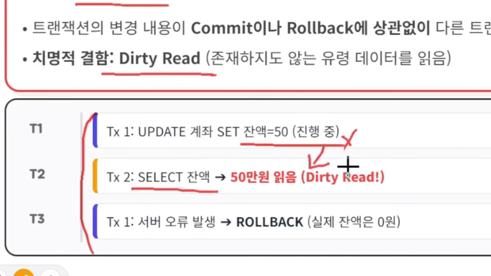
Read Committed는 "확정된 것만 믿는다"예요. Oracle과 PostgreSQL의 기본값이기도 해요. 타임라인 T2에서 트랜잭션 2는 커밋 전 값 대신 기존 100만 원을 읽어서 Dirty Read를 막아요(초록 글씨). 그런데 T3에서 트랜잭션 1이 커밋한 뒤 T4에서 다시 읽으면 50만 원이 나와요(빨간 글씨). 한 트랜잭션 안에서 같은 쿼리의 결과가 달라진 거예요.
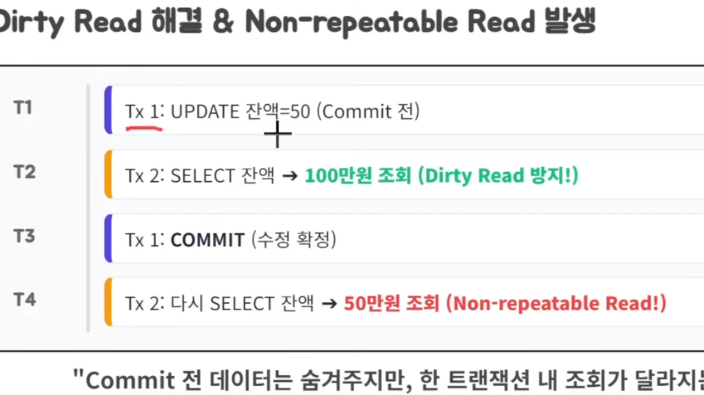
Repeatable Read와 Serializable
Repeatable Read는 "처음 본 스냅샷을 끝까지 유지"해요. 화면 첫 줄에서 트랜잭션 1이 100만 원을 읽고(Snapshot Read), 트랜잭션 2가 50으로 바꾸고 커밋해도, 셋째 줄에서 트랜잭션 1은 여전히 100만 원을 봐요(반복 읽기 보장). 하지만 넷째 줄처럼 트랜잭션 2가 ID=11 신규 행을 넣고 커밋하면, 마지막 줄의 범위 SELECT에서 행 개수가 늘어나요. ANSI 기준으로는 이게 이 단계의 한계인 Phantom Read예요.
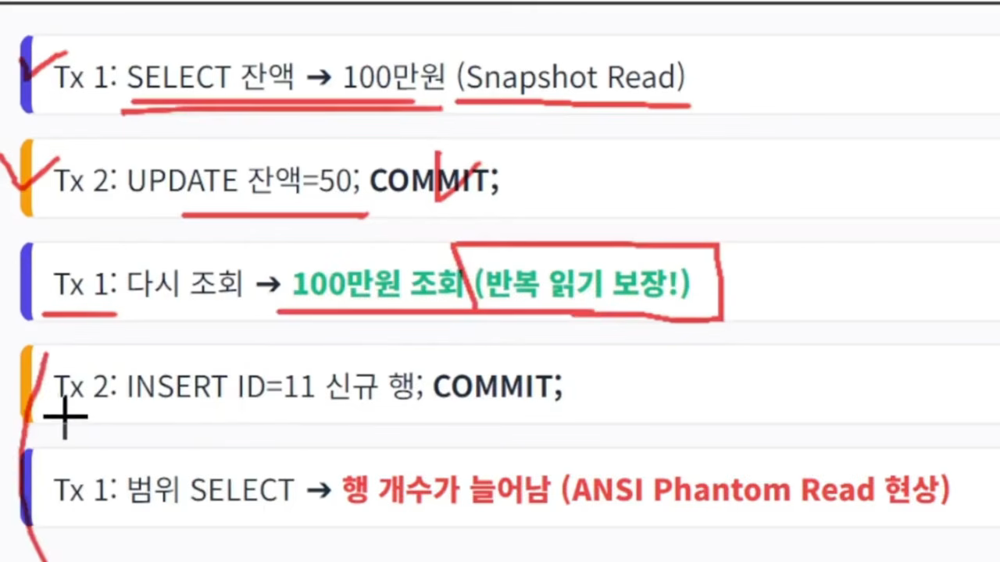
발표자는 여기에 실무 차이를 덧붙여요. MySQL은 넥스트 키 락으로 범위 자체를 잠가서, Repeatable Read에서도 새 행이 들어와 개수가 늘어나는 현상을 막아요. PostgreSQL 같은 현대 DBMS도 이 단계에서 팬텀 리드를 대부분 막아 준다고 해요.
Serializable은 완벽한 격리예요. ANSI 기준으로 읽기에도 공유 잠금(S-Lock)을 걸어요. 타임라인에서 트랜잭션 1이 가격 > 100 범위를 조회하자 T2의 트랜잭션 2 INSERT(가격 150)가 "무한 대기"에 걸려요. T3에서 트랜잭션 1이 같은 SELECT를 다시 해도 결과가 같고, T4에 트랜잭션 1이 커밋해야 T5에서 비로소 삽입이 돼요. 단순 읽기가 쓰기를 멈춰 세우니 처리량이 떨어지고 병목과 데드락의 원인이 될 수 있어요. 그래서 금융·정산·회계처럼 정합성이 절대적인 곳에서만 써요.
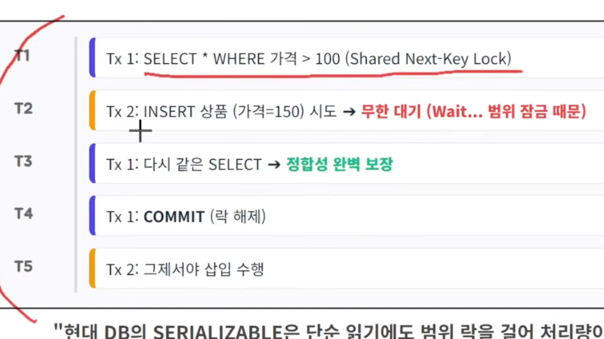
락 없이 격리를 지키는 MVCC
그럼 DB는 락 없이 어떻게 격리를 지킬까요. 답은 MVCC예요. 슬라이드 왼쪽 Current Page에는 최신 값 잔액 50만 원(Tx ID 200)이, 오른쪽 Undo Log에는 이전 값 100만 원(Tx ID 100)이 있어요. 데이터를 고칠 때 이전 값을 덮어쓰지 않고 Undo 영역에 남겨서 한 데이터의 여러 버전이 공존하게 해요. 읽는 쪽은 자기 트랜잭션이 시작한 시점을 기준으로, 현재 페이지 값이 그보다 나중에 커밋됐으면 화살표를 따라 Undo의 과거 버전을 읽어요.
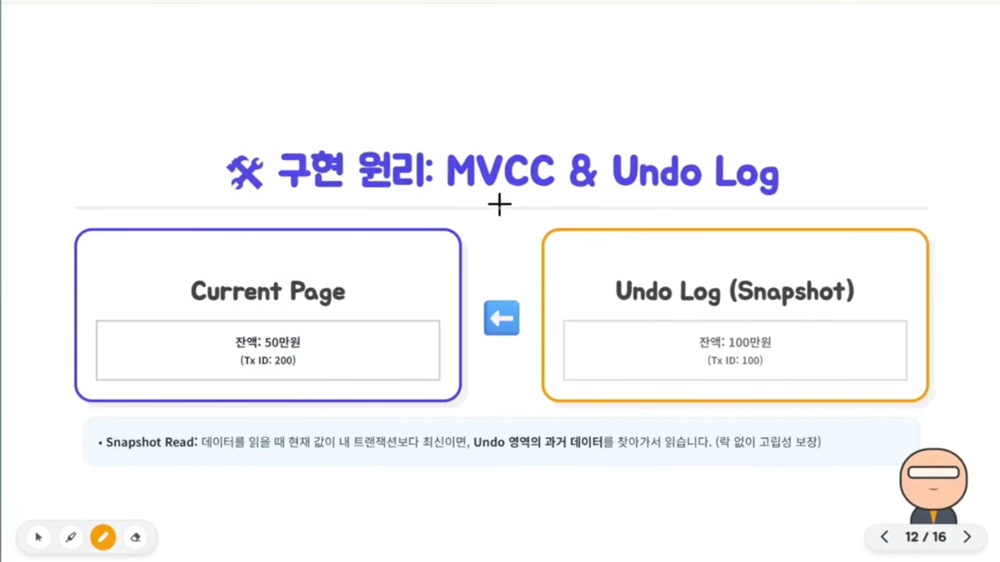
슬라이드의 정합성 지도를 표로 옮겼어요. "발생"은 그 현상이 생긴다는 뜻, "방지"는 막는다는 뜻이에요. 아래로 갈수록 "방지"가 하나씩 늘어서, Serializable은 세 칸이 모두 "방지"예요.
| 격리 수준 (ANSI) | Dirty Read | Non-repeatable Read | Phantom Read |
|---|---|---|---|
| Lv 0. Read Uncommitted | 발생 | 발생 | 발생 |
| Lv 1. Read Committed | 방지 | 발생 | 발생 |
| Lv 2. Repeatable Read | 방지 | 방지 | 발생* |
| Lv 3. Serializable | 방지 | 방지 | 방지 |
* 슬라이드 주석대로 MySQL InnoDB는 Next-Key Lock과 Gap Lock 덕분에 Repeatable Read에서도 팬텀 리드를 막아요. 면접에서는 이 표와 함께 "ANSI 기준과 실제 DBMS 동작은 다르다"는 한 줄을 붙이면 좋아요. 이 내용은 영상 29:24에 나와요.
권장 답변은 이래요. 낮은 수준은 처리량이 높지만 정합성 오류가 생기고, 높은 수준은 락 때문에 성능 병목이 심해져요. 실무에서는 성능을 위해 주로 Read Committed를 쓰고, 정산처럼 일관성이 중요한 곳은 Repeatable Read에 비관적 락(SELECT FOR UPDATE)을 조합해요. 꼬리 질문으로는 "왜 Oracle은 Read Committed, MySQL은 Repeatable Read가 기본인가"를 남겨요.
ACID와 Redo·Undo 로그
트랜잭션과 ACID
면접 질문은 "은행 시스템을 설계한다면 ACID를 어떻게 보장할 건가요?"예요. 먼저 트랜잭션의 정의부터 짚어요. 슬라이드 노란 상자의 송금 시나리오가 예시예요. 1번 내 계좌에서 1만 원 차감, 2번 상대 계좌에 1만 원 입금. 이 두 작업은 모두 성공하거나 모두 실패해야 의미가 있어요. 이렇게 하나의 꾸러미로 묶은 논리적 작업 단위가 트랜잭션이에요.
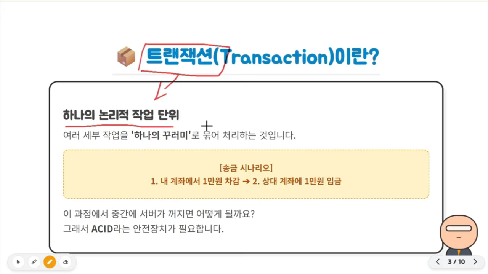
요약표는 속성, 의미, 실무 핵심 기술 세 열로 되어 있어요. 원자성(A)은 완전 성공 또는 취소이고 Undo 로그와 Rollback으로 지켜요. 일관성(C)은 규칙 준수와 무결성으로, 계좌 잔액은 0 이상(도메인 제약), 존재하지 않는 회원 ID로는 주문 불가(참조 무결성), 이메일 중복 금지(유일성) 같은 규칙을 Constraints와 Trigger로 강제해요. 격리성(I)은 트랜잭션 간 독립성으로 Lock, MVCC, 격리 수준이 맡아요. 지속성(D)은 장애 후에도 보존되는 성질로 Redo 로그와 WAL(Write-Ahead Logging)이 맡아요.
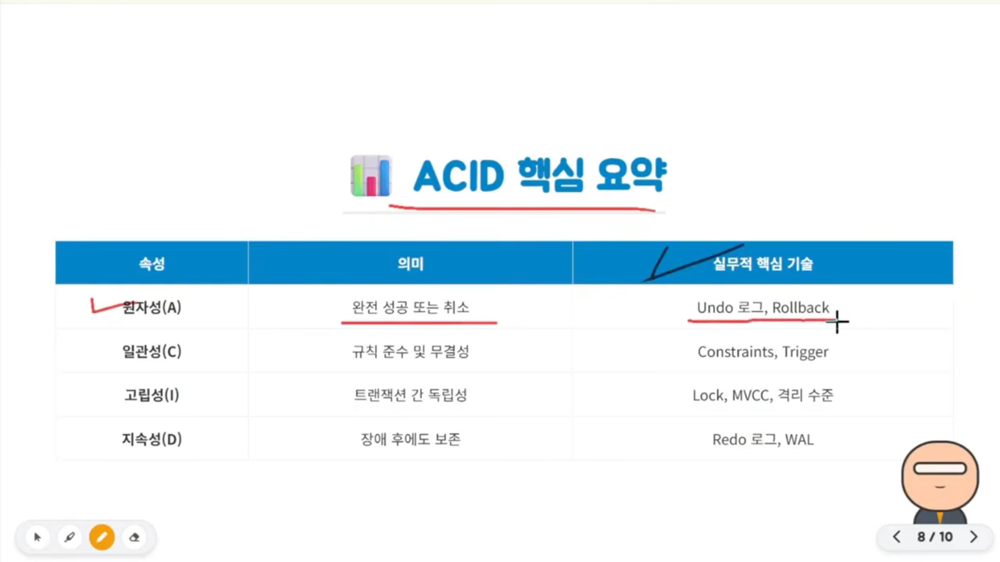
발표자는 결론적으로 ACID가 "데이터 정합성이 서비스 신뢰와 직결되는 핵심 도메인에서 RDB를 써야 하는 근거"라고 정리해요.
Redo는 살리고 Undo는 지워요
다음 편은 ACID 중 원자성과 지속성이 물리적으로 어떻게 구현되는지 묻는 질문이에요. Redo 로그의 구호는 "성공한 건 살리자"예요. 커밋한 데이터는 메모리 버퍼에는 반영됐어도 디스크 데이터 파일에는 아직 안 써졌을 수 있어요. 그 사이 서버가 죽으면 메모리 내용은 사라지니, Redo 로그에 남긴 변경 후 값(After Image)을 다시 실행해서 결과를 복구해요. Undo 로그의 구호는 "실패한 건 지우자"예요. 오류나 사용자의 롤백 요청이 오면 변경 전 값(Before Image)으로 되돌리고, MVCC에서 다른 사용자에게 수정 전 데이터를 보여 주는 데도 써요.
둘을 묶는 대원칙이 WAL이에요. 슬라이드 흐름은 1. 메모리 데이터 변경 → 2. 로그 파일에 기록(Redo/Undo) → 3. 데이터 파일 반영(Lazy Write)이에요. 데이터 파일보다 로그를 먼저 써요. 큰 데이터 파일을 무작위로 뒤지며 고치는 것보다 로그 끝에 순차로 덧붙이는 게 훨씬 빠르고(성능), 데이터 파일 반영 전에 사고가 나도 로그만 있으면 복구할 수 있기 때문이에요(안전).
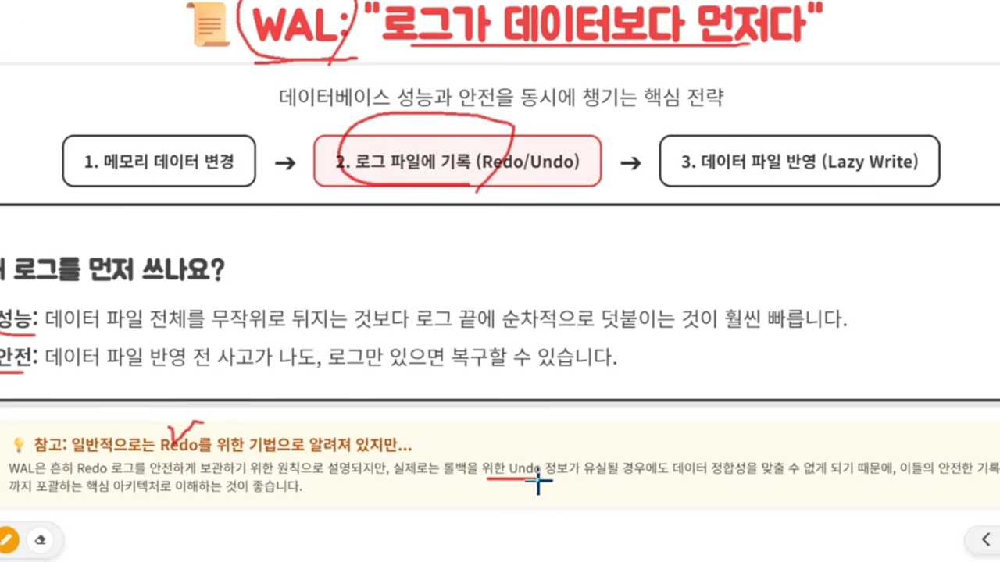
장애 복구 시나리오 타임라인을 봐요. 초록 막대 T1은 크래시 전에 커밋됐고, 주황 막대 T2는 빨간 충돌 표시 지점까지 진행 중이었어요. 왼쪽 세로선은 체크포인트로, 메모리와 디스크가 마지막으로 일치한 안전 지점이에요. 복구는 체크포인트 이후 로그만 봐요. 1단계 Redo는 T1과 T2를 가리지 않고 로그대로 모두 재실행해서 사고 직전 상태를 만들어요. 2단계 Undo는 커밋 마크가 없는 미완성 T2를 찾아 그 작업만 취소해요.
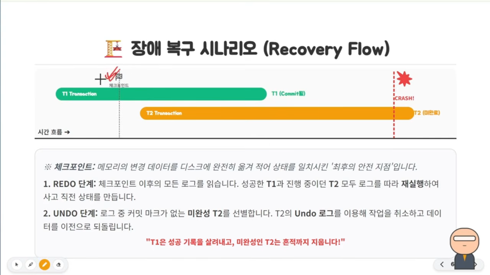
DBMS마다 구현은 조금씩 달라요. 표의 MySQL(InnoDB)은 Redo Log File(ib_logfile)과 Undo Segment를, Oracle은 Online Redo Log Files와 전용 Undo Tablespace를 둬요. PostgreSQL은 Redo 역할을 WAL(XLOG)이 맡고 Undo 칸은 "물리적 로그 없음(MVCC로 해결)"이에요. 데이터를 덮어쓰지 않고 새 버전을 만드는 구조라, 페이지 안에 남은 과거 튜플로 원자성을 지켜요.
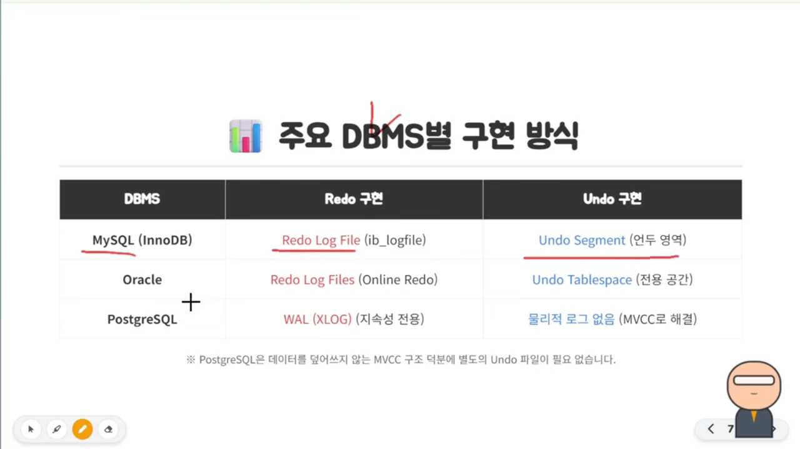
마지막 비교표는 네 줄이에요. 저장 내용은 Redo가 변경 후 값, Undo가 변경 전 값이에요. 대상 트랜잭션은 Redo가 커밋 성공한 것, Undo가 실패하거나 진행 중인 것이에요. 기여하는 ACID는 Redo가 지속성, Undo가 원자성과 고립성이에요. 비유는 Redo가 "작업 일지 재현(Replay)", Undo가 "작업 취소 버튼"이에요.
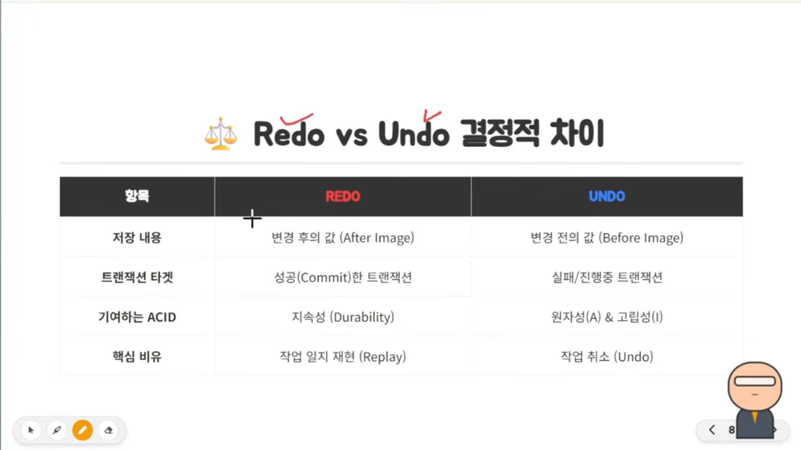
정규화와 반정규화
"정규화는 테이블 쪼개는 거, 반정규화는 정규화 안 하는 거"라는 답은 틀리진 않지만 목적과 과정이 빠져 있어서 임팩트가 없다고 해요. 정규화를 왜 하는지 답할 때는 이상 현상이라는 말이 꼭 나와야 해요.
왜 정규화하나요: 이상 현상
정규화 안 된 주문 테이블이에요. 주문번호 101, 102, 103 세 줄 모두에 회원명 홍길동과 주소 "서울시 강남구"가 반복돼요. 상품명과 가격도 같은 테이블에 있어요. 홍길동이 이사 가면 주소를 세 곳이나 고쳐야 하고, 실수하면 데이터가 꼬여요.
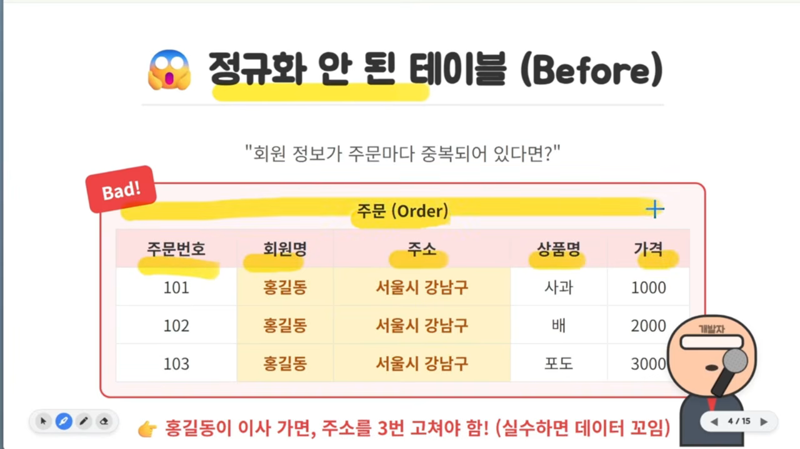
이 테이블에서 생기는 이상 현상은 세 가지예요. 카드 왼쪽부터 갱신 이상은 주소를 두 곳만 고치고 하나를 빼먹어 데이터가 불일치하는 거예요. 삽입 이상은 주문을 안 한 신규 회원은 등록할 수 없는 거예요. 삭제 이상은 마지막 주문을 취소하면 회원 정보까지 같이 지워지는 거예요.
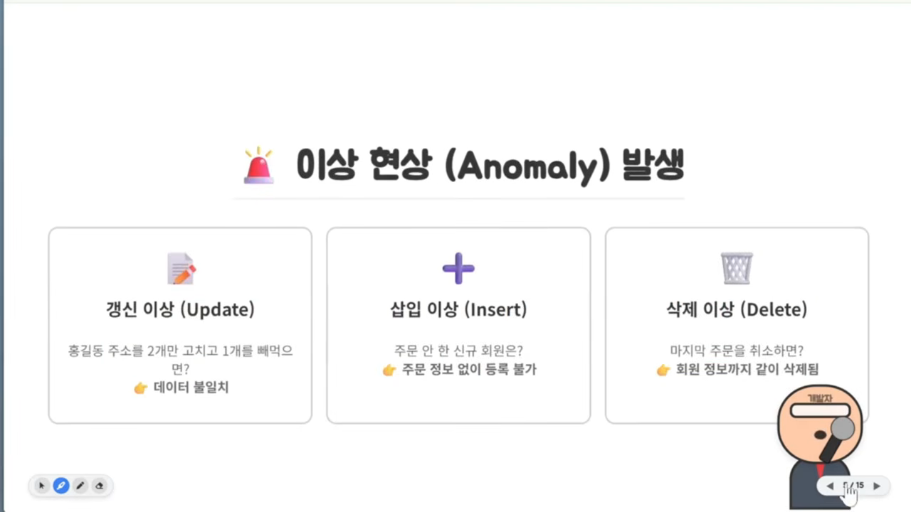
발표자는 정규화를 도서관 서가에 비유해요. 문학은 문학 코너, 잡지는 잡지 코너에 정리해 두는 거예요. 이 이론의 뿌리는 E.F. Codd 박사의 논문이에요. 데이터 중복으로 생기는 불일치를 수학적으로 정의하고 관계 모델과 정규화 개념의 기초를 세웠다고 소개해요.
정규화의 대가와 반정규화
대가는 조인이에요. 슬라이드처럼 User × Order × Product로 쪼개 두면 관리는 편하지만, 한 번 조회할 때마다 테이블 3~4개를 합쳐야 해요. 발표자는 "정규화하면 성능이 좋아진다"는 오해를 바로잡아요. 정규화는 오히려 읽기 성능을 떨어뜨릴 수 있어요.
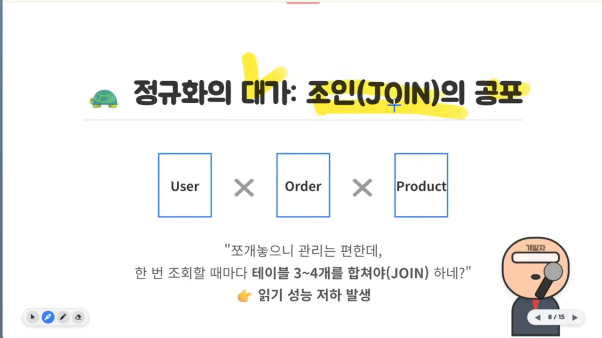
반정규화는 성능을 위해 일부러 중복을 허용해요. 비유는 시험 기간 책상이에요. 필요한 책을 다 꺼내 놓아 빨리 찾지만 정리는 안 돼요. 쇼핑몰 예시의 주문_상세 테이블에는 상품명과 단가가 중복으로 들어 있어요. 다른 주문에도 사과가 들어오면 같은 값이 또 저장되지만, 조인 없이 이 테이블만 SELECT해서 상품 정보까지 한 번에 가져올 수 있어요.
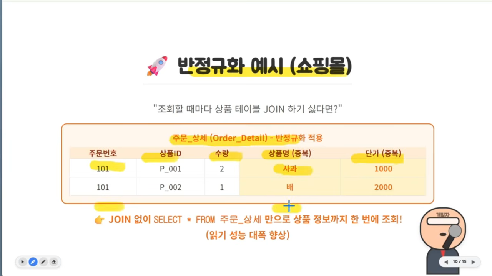
실무에서 반정규화하는 더 중요한 이유는 성능이 아니라 비즈니스 로직, 특히 이력 보존이에요. 2023년 1월 1일 주문서에는 배송지 "서울시 강남구(당시 주소)"와 가격 "10,000원(당시 가격)"이 찍혀 있어요. 만약 정규화해서 상품 테이블을 참조했다면, 1년 뒤 가격이 10% 올라 11,000원이 됐을 때 과거 주문서의 가격도 같이 바뀌어 버려요. 주소도 마찬가지예요.
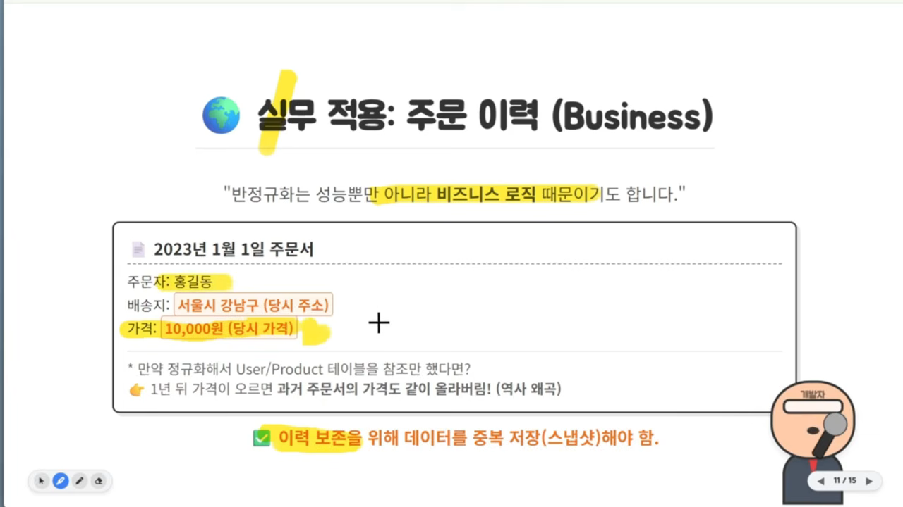
순서도 중요해요. 반정규화는 정규화된 모델을 바탕으로, 성능 문제가 생겼을 때 전략적으로 무너뜨리는 거예요. 처음부터 중복되게 설계하는 건 그냥 잘못된 설계라고 해요. 비교표의 마지막 줄 "순서"에서 정규화는 기본(Default), 반정규화는 필요시 선택(Option)이에요.
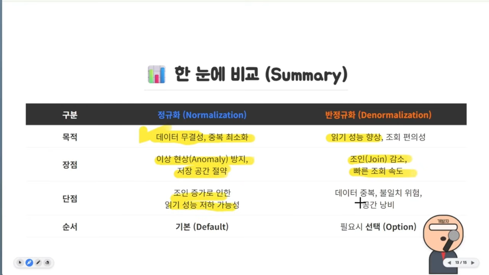
1·2·3정규형을 한 테이블로 따라가요
다음 편은 구독자 요청으로 만든 정규형 실습이에요. 출발점은 사장님이 엑셀로 관리하던 주문 내역(비정규형)이에요. 주문 1001의 주문상품 칸에 "사과, 배", 수량 칸에 "1, 2"가 한 칸에 같이 들어 있어요. 회원명과 등급('VIP', 'GOLD')도 같은 표에 있어요.
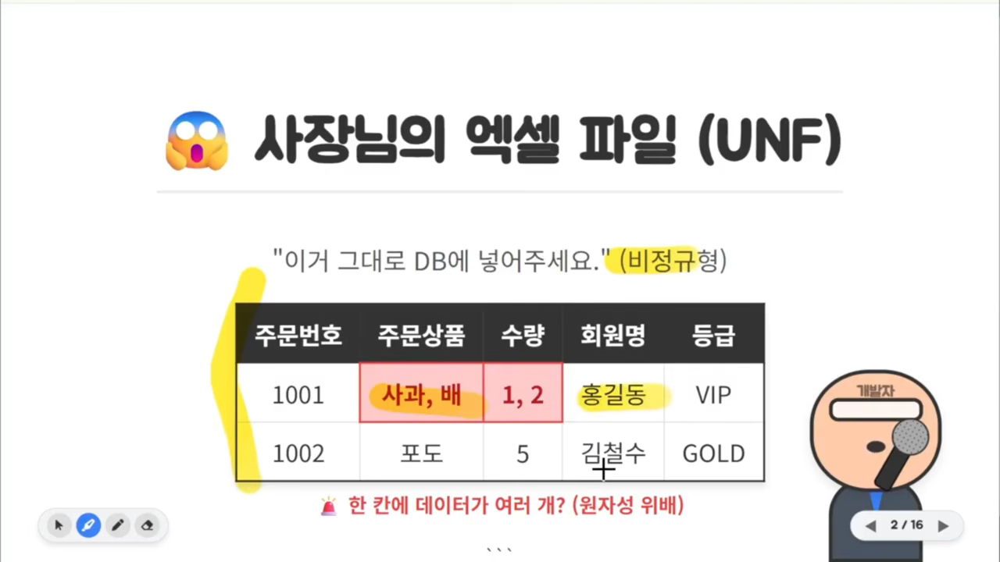
1정규형의 핵심은 원자값이에요. 모든 컬럼은 더 쪼갤 수 없는 값 하나만 가져야 해요. 여기서 말하는 원자성은 트랜잭션 ACID의 원자성과 이름만 같고 다른 개념이라고 짚어요. 적용 결과 오른쪽 After 표에서 1001번 주문이 P_A(사과)와 P_B(배) 두 행으로 나뉘었어요. 그러면 주문번호만으로는 행을 구분할 수 없으니, 아래 문구처럼 PK(Primary Key)가 주문번호+상품ID 복합키가 돼요.
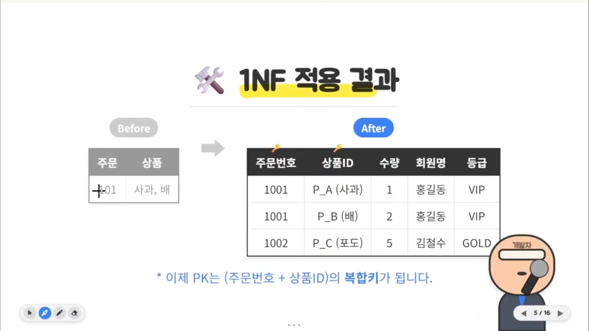
2·3정규형으로 가기 전에 함수 종속성을 알아야 해요. X를 알면 Y가 오직 하나로 정해질 때 "X가 Y를 결정한다(Y는 X에 종속된다)"고 해요. 학번을 알면 이름이 정해지지만, 이름이 같아도 학번은 다를 수 있으니 반대는 성립하지 않아요. 종속성은 DB 구조가 아니라 비즈니스 규칙이 정해요. 그래서 정규화의 진짜 의미는 테이블을 잘게 쪼개는 게 아니라 잘못된 종속성을 끊고 올바른 위치로 재배치하는 거예요.
아래 비교 카드가 2정규형과 3정규형의 차이를 한 장에 보여 줘요. 왼쪽 2정규형(Partial)은 "복합키의 일부"에만 의존하는 놈을 끊어요. (A, B) → C인데 A나 B 하나만 알아도 C가 정해지는 경우예요. 오른쪽 3정규형(Transitive)은 "키가 아닌 일반 컬럼"에 의존하는 놈을 끊어요. A → B → C처럼 건너 건너 아는 사이예요.
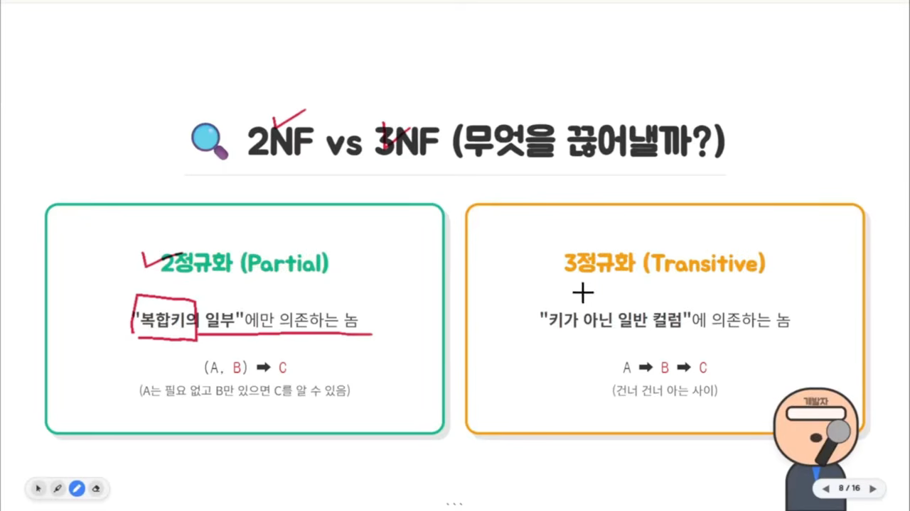
예시에 대입하면, 상품명은 상품ID만 알면 정해지고 주문번호와는 상관없어요. 복합키 일부에만 종속된 거라 상품 테이블로 떼어 내는 게 2정규형이에요. 3정규형 슬라이드는 주문번호 → 회원ID → 등급의 사슬을 보여 줘요. 등급은 주문번호가 아니라 회원ID를 통해서 알 수 있으니, 회원 테이블을 따로 만들어 등급을 옮기고 주문 테이블은 회원ID로 참조하게 해요.
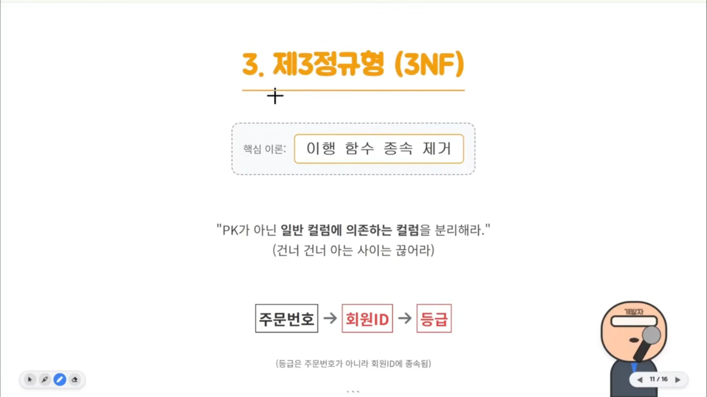
ORM과 Stored Procedure
"데이터 처리 로직을 ORM과 Stored Procedure 중 무엇으로 짜야 하나요?"라는 질문에 "요즘 누가 SP 써요, 무조건 JPA죠"나 "ORM은 느리니 닥치고 SP죠"라고 답하면 둘 다 편향된 답이에요. 발표자는 "은탄환은 없다"며 유지보수성과 성능, 맥락을 보고 정해야 한다고 해요.
ORM(Object-Relational Mapping)의 핵심은 "DB는 거들 뿐"이에요. Java나 Python 코드에서 데이터를 다루고 DB는 저장소 역할만 해요. 객체와 테이블의 구조가 안 맞는 문제(임피던스 불일치)를 풀려고 나왔고, 비유하면 내 언어로 말하면 SQL(Structured Query Language)로 옮겨 주는 통번역기예요. SP(Stored Procedure)의 핵심은 "데이터 옆에서 처리"예요. DB 안에 변수·조건문·반복문까지 쓴 로직을 저장해 두고 DB 엔진이 직접 실행해요. 비유는 현지 가이드예요.
비교표에서 로직 위치는 ORM이 Application Server, SP가 Database Server예요. ORM의 장점은 생산성·유지보수·DB 독립성이고, 단점은 복잡한 쿼리가 비효율적이라는 점(N+1)이에요. SP는 성능 최적화와 네트워크 절약이 장점이고, 디버깅이 어렵고 DB에 종속된다는 게 단점이에요. 마지막 줄 "변경 시"가 흥미로워요. ORM은 코드 배포(CI(Continuous Integration)/CD)가 필요하지만 SP는 DB 스크립트만 고치면 즉시 반영돼요.
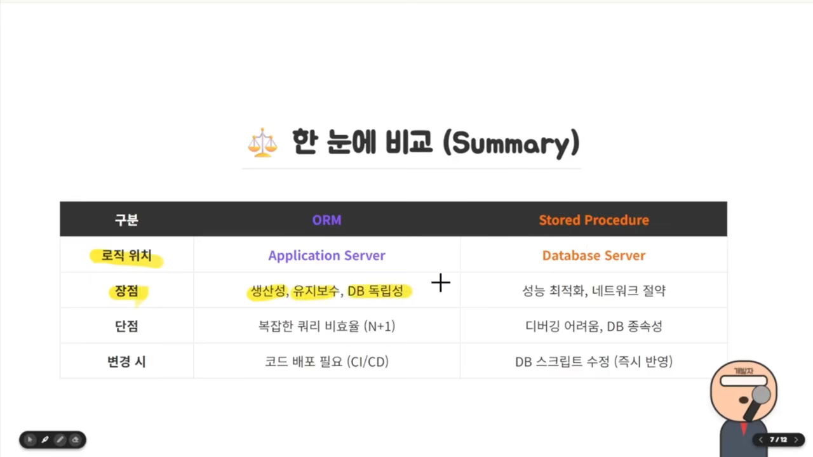
단점만 따로 모은 슬라이드도 있어요. 위 보라 상자는 ORM의 아킬레스건으로, N+1 문제(쿼리 한 번이면 될 걸 수백 번 날려 DB가 죽음)와 복잡한 통계·집계 쿼리는 SQL로 직접 짜는 게 훨씬 빠르다는 점이에요. 아래 주황 상자는 SP의 치명적 단점으로, 벤더 락인(Oracle로 짜면 MySQL로 못 옮김), 버전 관리 지옥(Git으로 관리하기 힘들고 배포 프로세스가 꼬임), DB 부하(비싼 DB 자원을 로직 계산에 써서 스케일아웃이 어려움)예요.
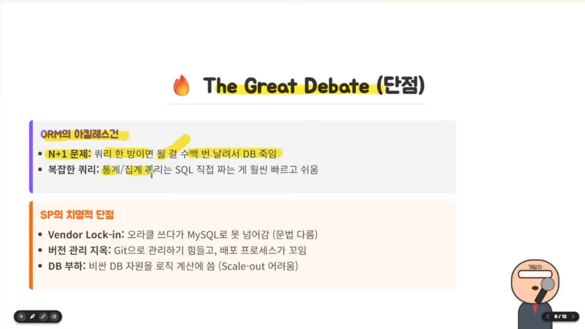
N+1 문제를 코드로 보면 이래요. 왼쪽 코드는 orderRepo.findAll()로 주문 목록을 가져온 뒤 for 문에서 o.getUser().getName()을 출력해요. 오른쪽 실제 쿼리를 보면 첫 줄 SELECT * FROM orders 한 번 뒤에 SELECT * FROM users WHERE id=1, id=2, … 가 주문 수만큼 이어져요.
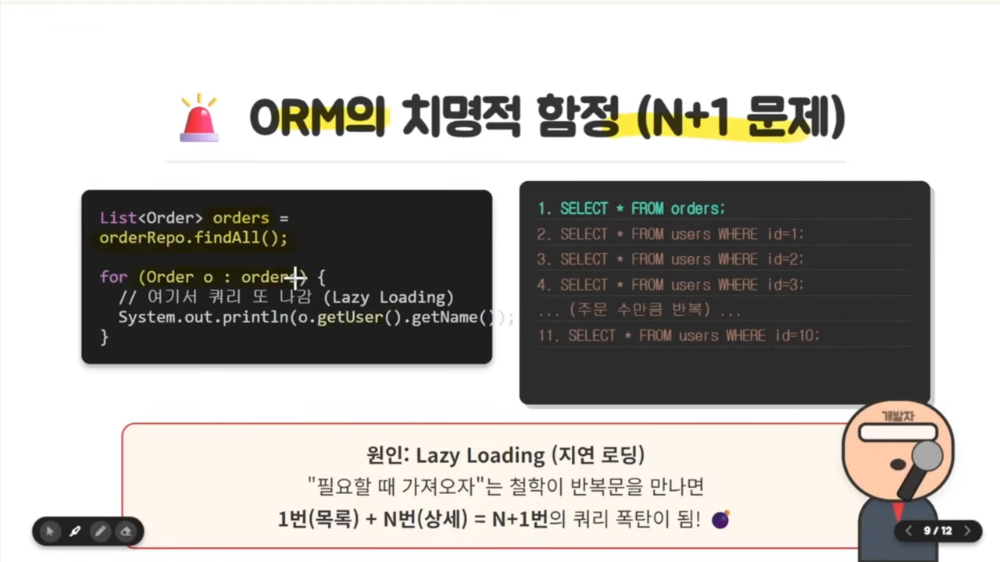
선택 기준 슬라이드는 두 칸이에요. ORM은 일반적인 CRUD(Create, Read, Update, Delete), 빠른 개발과 유지보수가 중요할 때, DB가 바뀔 가능성이 있을 때, 팀원이 SQL보다 코드에 익숙할 때 추천해요. SP는 수백만 건 대량 배치, 복잡한 통계·집계, 네트워크 왕복을 줄여야 할 때, 절대적인 데이터 무결성이 필요할 때 추천해요. 발표자는 DB 팀이 따로 없고 빠르게 시장에 내야 하는 스타트업 구조에는 ORM이 더 맞는다고 덧붙여요.
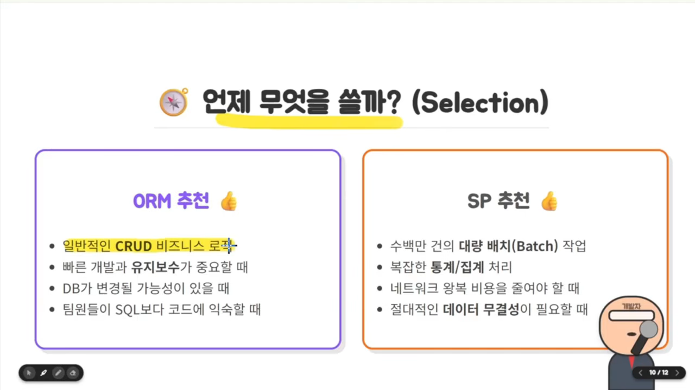
파티셔닝·리플리케이션·샤딩
두 편을 묶었어요. 앞 편은 파티셔닝과 샤딩, 뒤 편은 리플리케이션과 샤딩이에요. 배경은 데이터 폭증이에요. 테이블이 커지면 인덱스가 깊어져 디스크 접근 비용이 오르고(I/O 병목), 트랜잭션 경합과 락 대기가 늘고, 백업·복구·배포 시간이 길어지고, 결국 CPU·메모리·디스크를 늘리는 데도 한계가 와요. 그때 데이터를 논리적으로 또는 물리적으로 나눠요.
먼저 세 전략이 데이터를 어떻게 배치하는지 한 그림에 모았어요. 영상은 이걸 두 편에 걸쳐 따로 보여 줘요.
파티셔닝: 한 지붕 아래 방 나누기
파티셔닝은 단일 DB 서버 안에서 거대한 테이블을 여러 파티션으로 나눠 저장하는 거예요. 슬라이드 그림처럼 하나의 인스턴스 안에 2023년, 2024년, 2025년 데이터가 따로 들어 있어요. 개발자는 여전히 테이블 하나처럼 쓰고, 어느 파티션을 읽을지는 DB 엔진이 알아서 정해요.
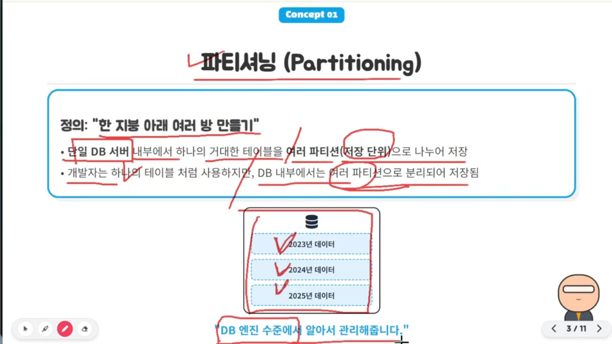
나누는 방법은 네 가지예요. 1번 Range는 날짜나 숫자 범위로 나눠요(월별 로그). 발표자도 게임 회사에서 쌓이는 로그를 월별 파티션으로 관리했다고 해요. 2번 List는 지역 코드(서울, 부산)처럼 특정 값 목록으로 나눠요. 3번 Hash는 해시 함수로 데이터를 고르게 나눠 특정 값 쏠림을 막아요. 4번 Composite는 Range + Hash처럼 둘 이상을 조합해요.
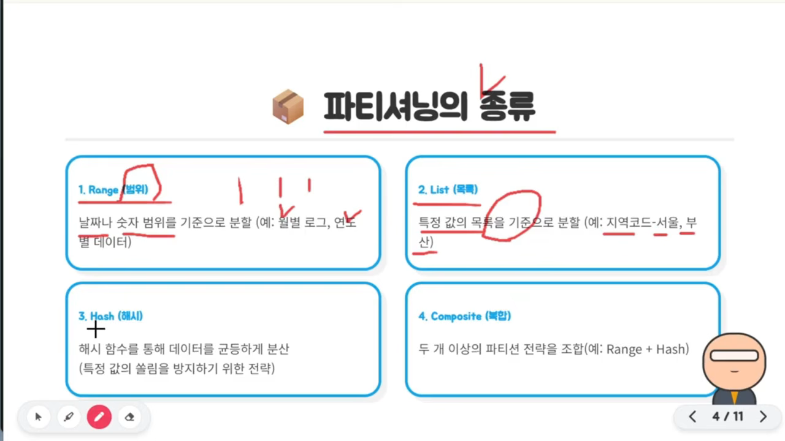
샤딩은 "옆 동네에 새 집 짓기"예요. 데이터를 서로 다른 물리 서버로 나누고, 각 서버를 샤드라고 불러요. 비교표에서 차이가 분명해요. 물리 서버는 파티셔닝이 단일, 샤딩이 다수예요. 관리 주체는 파티셔닝이 DBMS 엔진, 샤딩이 애플리케이션이나 미들웨어예요. SQL 수정은 파티셔닝이 불필요(투명성 높음), 샤딩이 필요(샤드 키 고려 필수)예요. 확장성은 파티셔닝이 수직(Scale-up) 중심, 샤딩이 수평(Scale-out) 무한대예요.
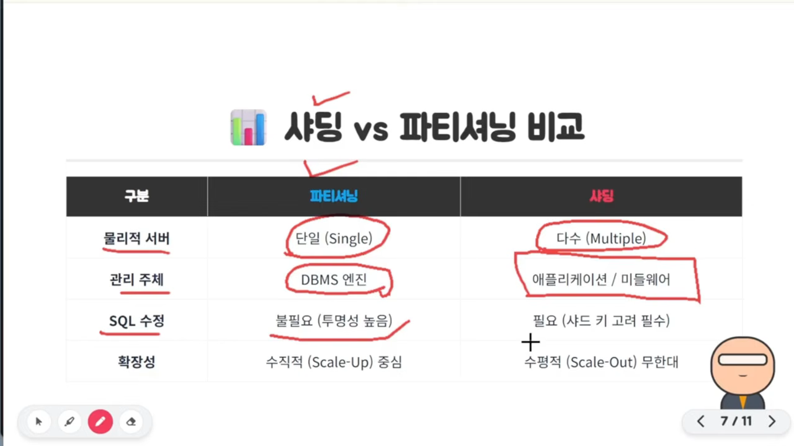
파티셔닝은 시간 순으로 계속 쌓이는 로그 테이블, 조회 조건에 날짜 컬럼이 자주 들어가는 테이블, 오래된 데이터를 파티션째 지워야 하는 경우에 좋아요. 샤딩은 단일 DB의 한계를 넘는 트래픽과 데이터, 한국·미국 서버처럼 지역별로 데이터를 두고 싶을 때, 스케일업이 한계에 닿았을 때 고려해요. 조인이 거의 불가능해지니 데이터 모델링을 미리 잘해야 해요.
리플리케이션: 똑같은 걸 복사해
리플리케이션은 원본을 여러 서버에 복제해요. 그림 왼쪽 Primary(Write)에서 쓰기가 일어나면 오른쪽 Replica 1, Replica 2(Read Only)로 전파돼요. 목적은 읽기 성능 향상과 고가용성이에요. 도구로는 MySQL Binlog, PostgreSQL Streaming, AWS(Amazon Web Services) Aurora가 적혀 있어요.
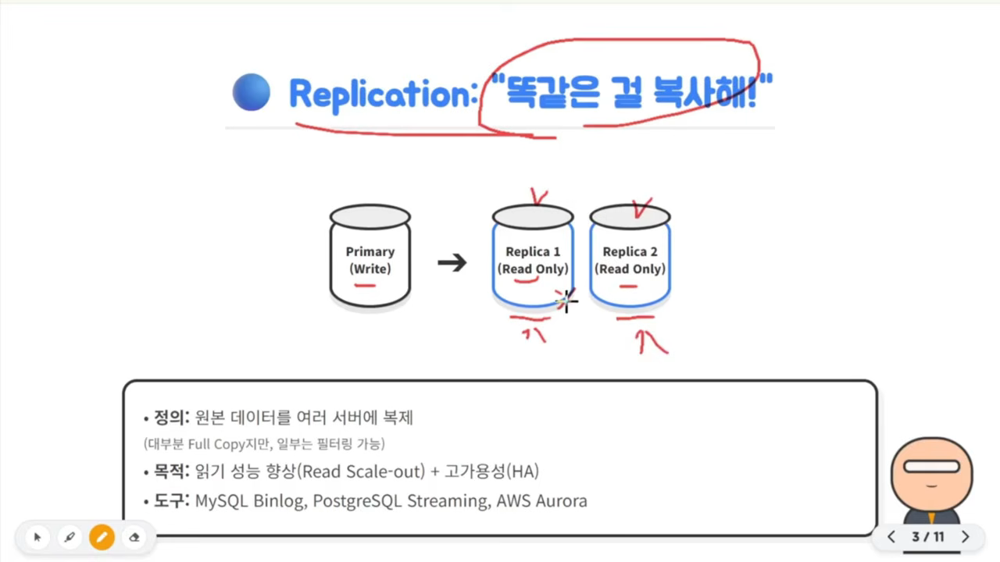
장점은 구현이 쉽고(MySQL은 설정만으로, AWS는 버튼 클릭으로), 리플리카를 늘리는 만큼 읽기 QPS(Queries Per Second)가 선형으로 늘고, 장애 때 빠르게 넘길 수 있다는 거예요. 단점은 쓰기가 Primary 한 곳에 몰려 쓰기 병목은 그대로라는 점, 리플리카 3대면 저장 용량이 4배가 된다는 점, 네트워크 지연 등으로 리플리카가 몇 초에서 몇 분까지 늦을 수 있다는 점(복제 지연)이에요.
샤딩 슬라이드는 데이터를 "찢어서 나눠"요. Shard 1에는 User 1~1K, Shard 2에는 1K~2K, Shard 3에는 2K~3K가 들어 있어요. 나누는 방식은 Hash(ID%N), Range(날짜), List/Composite예요. 쓰기 요청과 용량을 함께 나누는 전략이에요.
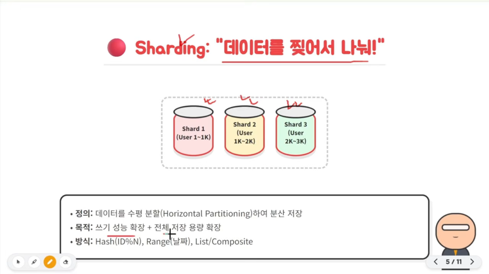
샤딩의 장점은 샤드 수만큼 쓰기 QPS가 선형으로 늘고, 개별 DB의 부하와 용량이 줄고, 수 TB(Terabyte) 이상 데이터에 거의 필수라는 점이에요. 단점은 세 가지예요. 물리적 조인이 거의 불가능해서 샤드 키를 맞춰 같은 샤드에 두거나 머티리얼라이즈드 뷰로 미리 합쳐야 해요. 인기 사용자처럼 특정 샤드 키에 트래픽이 몰리면 핫 샤드가 생겨요. 샤드 수를 바꾸면 데이터를 재분배하는 리샤딩에 다운타임이나 부하가 생겨요. 공개 사례로 YouTube가 MySQL 기반 샤딩을 쓴 것으로 알려져 있다고 해요.
스케일링 비교표는 다섯 줄이에요. 주요 목적은 리플리케이션이 읽기 향상과 가용성, 샤딩이 쓰기·용량 무한 확장이에요. 데이터 분배는 Full Copy 대 Subset, 스케일 방향은 읽기 복제본 추가 대 샤드 수 추가예요. 최대 약점은 쓰기 병목 해결 못 함 대 조인 불가와 운영 복잡도예요. 핵심 키워드는 "읽기가 많을 때" 대 "용량이 터질 때"예요.
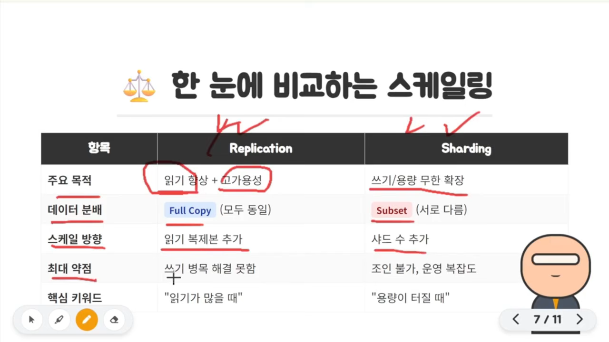
샤딩은 마지막 카드예요
샤딩 도입 전 체크리스트예요. 위에서부터 Vertical Scaling(서버 사양 업그레이드), Read Replica + Redis 캐싱, Query 최적화와 인덱스 튜닝, 단일 DB 내 Partitioning 적용이에요. 사양만 올려도 즉시 효과를 보는 경우가 많고, 읽기 부하를 리플리카와 Redis로 덜어 주면 쓰기에 미치던 영향도 줄어요. 실행 계획을 보고 느린 쿼리와 인덱스를 고치면 QPS가 두 배 이상 오르는 경우도 많다고 해요.
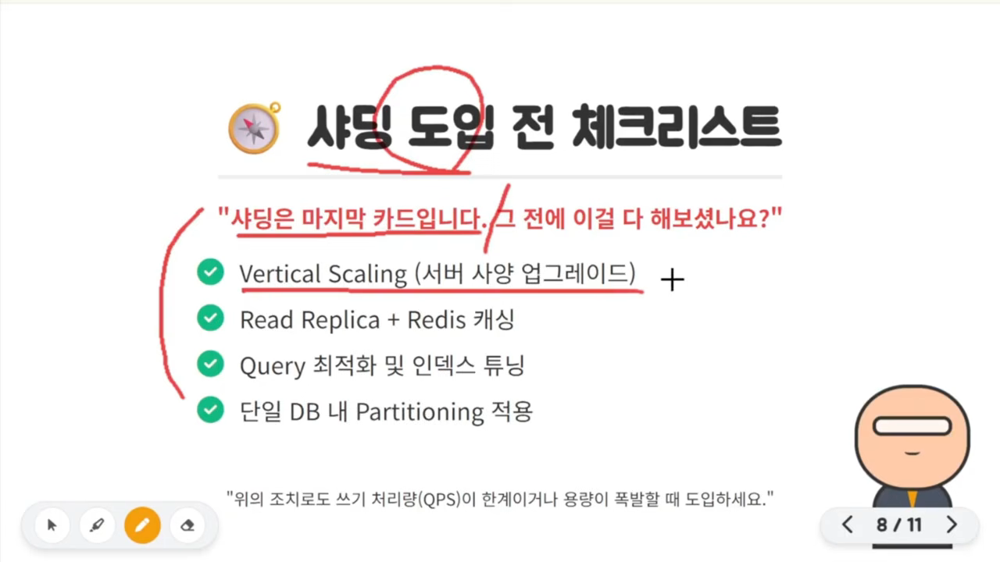
상황별 선택은 두 칸이에요. 읽기:쓰기 비율이 10:1 이상으로 매우 크면 리플리케이션이 가장 가성비 좋은 시작이에요. 데이터가 1TB를 넘고 쓰기가 폭주해서 더는 마스터가 버틸 수 없으면 샤딩이 현실적인 최종 병기예요. 하단에는 최근 트렌드로 CockroachDB와 TiDB처럼 샤딩과 복제를 DB 레벨에 내장한 분산 SQL이 적혀 있어요.
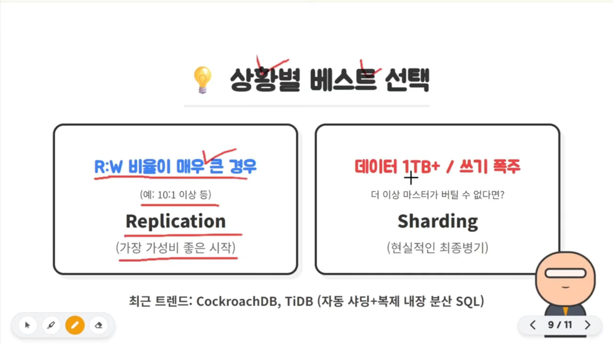
일관성 모델과 SQL·NoSQL
강한 일관성과 최종 일관성
일관성은 "어디서 읽든, 언제나 같은 값을 보여 주는가"예요. 서버 한 대에서는 당연하지만, 서버가 여러 대이고 데이터가 복제되면 각 서버가 동기화되는 타이밍이 달라져요. 이 타이밍을 어떻게 가져가느냐에 따라 두 가지로 나뉘어요.
강한 일관성은 쓰기 이후 모든 읽기가 항상 최신값을 보는 거예요. 사용자는 서버가 한 대인 것처럼 느껴요. 대신 복제본끼리 동기화될 때까지 기다려야 해서 지연이 늘고, 장애나 지연이 생기면 읽기·쓰기가 대기해 가용성이 떨어질 수 있어요. 최종 일관성은 지금은 다를 수 있지만 시간이 지나면 결국 같아지는 거예요. 기다리지 않으니 빠르고 가용성이 높아요. 발표자가 강조하는 진짜 포인트는, 불일치를 허용한다는 건 개발자가 Last-write-wins나 버전·타임스탬프, CRDT(Conflict-free Replicated Data Type) 같은 충돌 해결 정책을 설계해야 한다는 뜻이라는 점이에요. "틀려도 된다"가 아니라 "잠깐 다를 수 있고 수렴 전략을 갖고 있다"예요.
비유 슬라이드가 둘의 차이를 잘 보여 줘요. 왼쪽 Strong은 은행 창구예요. 서울점에서 입금했으면 부산점에서도 확정된 최신 잔액이 보여야 해요. 오른쪽 Eventual은 SNS(Social Networking Service) 좋아요예요. 내 폰엔 100개인데 친구 폰엔 99개여도, 잠시 후 같아지면 문제없어요.
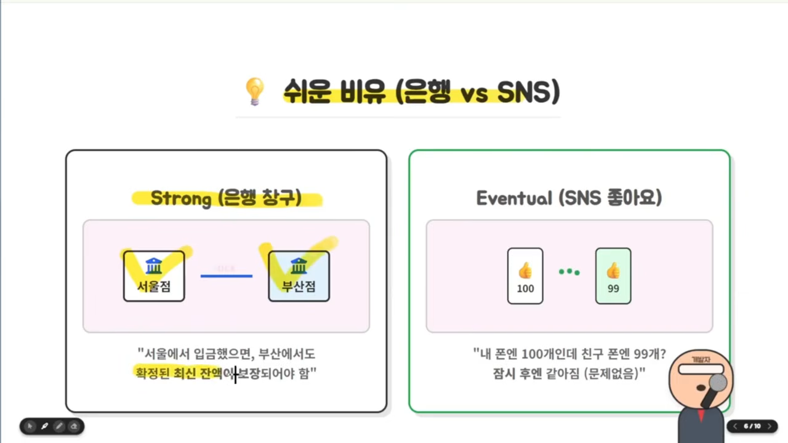
이 논의는 CAP(Consistency, Availability, Partition tolerance) 이론과 이어져요. 분산 시스템에서는 네트워크 분할(P)을 완전히 피하기 어려우니, 분할이 생겼을 때 일관성(C)과 가용성(A) 중 무엇을 우선할지 골라야 해요. 슬라이드 아래 줄처럼 강한 일관성은 보통 CP(정확성), 최종 일관성은 AP(속도)예요. 괄호 속 문구대로 이건 단순화이고, 실제 시스템은 옵션과 설계에 따라 스펙트럼처럼 달라져요.
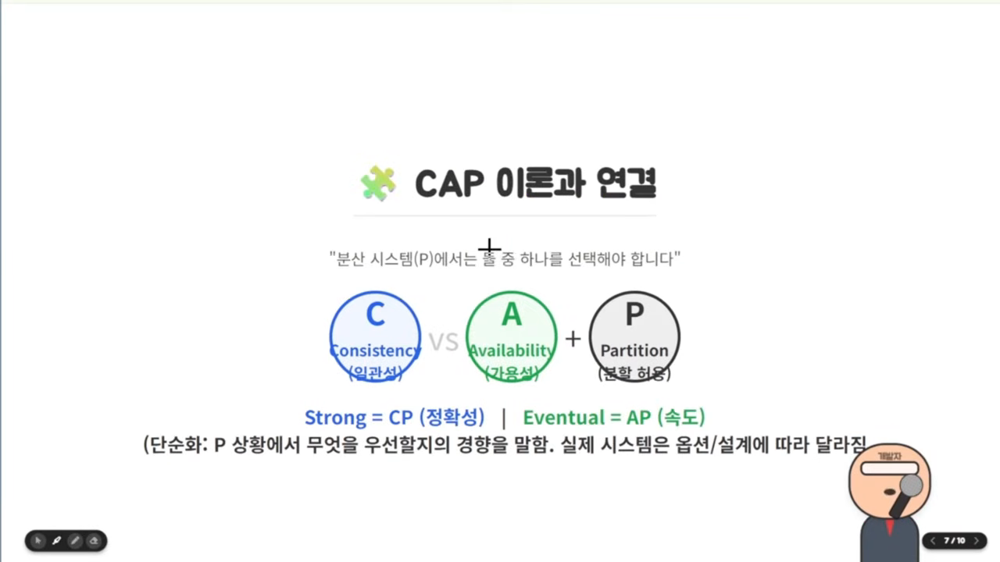
비교표 네 줄을 보면 읽기 결과는 항상 최신 값 대 잠시 과거 값 가능, 응답 속도는 느림(동기화 대기) 대 빠름(즉시 응답), 가용성은 낮아질 수 있음(Lock) 대 높음이에요. 대표 사용처는 강한 일관성이 금융·결제·재고·예매, 최종 일관성이 SNS 피드·댓글·캐시·알림이에요.
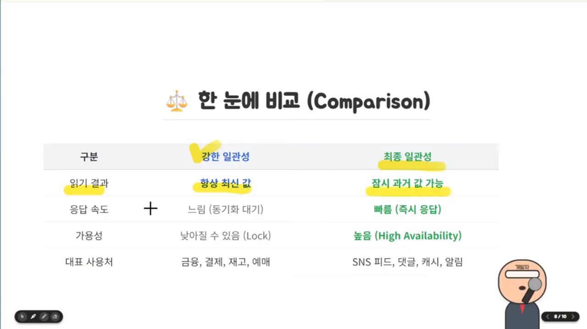
실무에서 대용량 시스템은 대부분 최종 일관성을 택해요. 슬라이드의 이유는 세 가지예요. 글로벌 서비스는 물리적 거리 때문에 동기화 지연이 커요. 수천만 트래픽을 감당하려면 Lock을 걸 수 없어요. "좋아요 숫자가 1초 늦게 뜨는 게 입금 안 되는 것보다 낫다"예요. 하단에 DynamoDB, Cassandra, CDN(Content Delivery Network)이 대규모 분산 환경에서 자주 쓰이는 이유로 적혀 있어요.
SQL과 NoSQL, 그리고 무너진 경계
질문은 "새 프로젝트에서 SQL과 NoSQL 중 무엇을 고를지, 명확한 기준이 있나요?"예요. SQL은 "엄격한 규격 아파트"예요. 핵심 철학은 ACID로 데이터가 절대 틀리면 안 되고, 고정 스키마에 복잡한 조인이 강해요. 정해진 평수와 구조처럼 입주민 관리가 체계적이지만, 구조 변경(ALTER TABLE)이 어렵고 확장하려면 재건축(스케일업) 위주예요. 대표 주자는 PostgreSQL, MySQL, Oracle이에요.
NoSQL은 "자유로운 캠핑장"이에요. 대규모 분산과 수평 확장을 위해 나온 비관계형 저장소를 통틀어 부르는 말이에요. 핵심 철학은 BASE(Basically Available, Soft state, Eventually consistent)로, 가용성을 우선하고 최종 일관성을 지향해요. "성능과 확장이 좋다면 미세한 오차는 OK"예요. 텐트든 차박이든 자유롭게 구성하고(동적 스키마) 땅만 있으면 텐트를 계속 늘려요(샤딩). 대신 복잡한 조인이 까다롭고 정합성은 앱에서 직접 챙겨야 하는 경우가 많아요. 대표 주자는 MongoDB, Redis, Cassandra, DynamoDB예요.
그런데 발표자는 SQL과 NoSQL을 이분법으로 나누는 시대는 끝났다고 해요. "2026년, DB의 경계가 무너졌다" 슬라이드 왼쪽은 SQL의 역습(PostgreSQL)이에요. JSONB(JSON Binary)로 NoSQL처럼 문서를 저장하고, 벡터 검색으로 AI(Artificial Intelligence) 시대의 의미 기반 검색을 하고, Citus 같은 확장으로 분산 SQL이 돼요. 오른쪽은 NoSQL의 진화(MongoDB)예요. 다중 문서 ACID 트랜잭션을 지원하고, 쿼리 언어도 SQL을 닮아 가고, 검색·집계까지 한 DB에서 하는 멀티 모델이 됐어요.
실전 선택 가이드는 두 칸이에요. SQL은 복잡한 관계와 조인이 많을 때, 은행·결제처럼 데이터 무결성이 생명일 때, 팀 전원이 SQL에 가장 익숙할 때 골라요. NoSQL은 초당 수만 건의 폭발적인 트래픽, 스키마가 수시로 바뀌는 MVP(Minimum Viable Product) 단계, 대용량 로그나 유저 활동 데이터에 골라요. 아래 주황 문구가 현실적인 결론이에요. 대부분 PostgreSQL로 시작해서 병목 지점에 NoSQL을 섞는 게 정석이에요.
하이브리드 전략 슬라이드는 PostgreSQL(핵심 트랜잭션, 계정) + Redis(캐시, 세션 관리) + Elasticsearch(고속 검색 엔진)를 나란히 놓아요. 제목은 "하나의 정답은 없다, 섞어 쓰세요"예요. MSA(Microservice Architecture)에서는 서비스마다 성격에 맞는 DB를 고르고, Netflix나 Amazon도 이렇게 섞어 쓴다고 해요. 이렇게 데이터 성격에 맞춰 여러 저장소를 쓰는 걸 폴리글랏 퍼시스턴스라고 해요.
CQRS와 원본·보조 저장소 패턴
CQRS: 쓰기와 조회의 책임을 나눠요
면접 질문은 "MSA는 DB가 파편화돼 있는데, 여러 서비스에 걸친 복잡한 조회는 어떻게 처리하나요?"예요. 슬라이드 위 빨간 상자에서 주문 DB, 배송 DB, 리뷰 DB 사이에 X 표시가 있어요. DB가 쪼개져 있어서 SQL 조인이 물리적으로 안 되고, API(Application Programming Interface)를 여러 번 불러 메모리에서 합치면 성능이 떨어져요. 여기에 "주문명 + 배송 상태 + 리뷰 여부를 최신순으로 페이징해 주세요" 같은 화면 요구가 붙으면 더 어려워져요.
CQRS는 Command(생성·수정·삭제처럼 상태를 바꾸는 명령)와 Query(상태를 바꾸지 않고 반환만 하는 조회)의 책임(Responsibility)을 분리(Segregation)한다는 뜻이에요. 비유는 도서관이에요. 사서는 책을 입고하고 규칙대로 분류하며 무결성을 지키고, 검색 전용 PC(Personal Computer)는 빠르게 찾는 데만 집중해요. 목적이 다른 두 역할을 한 시스템에 억지로 묶으면 비효율이 생겨요.
아키텍처 흐름도를 보면, 위 UI(User Interface) Layer 아래 왼쪽 Write APIs는 Command로 분홍색 Write Database에 저장하고, 오른쪽 Read APIs는 Query로 파란 Read Database에서 읽어요. 가운데 주황 화살표 Event Sync가 두 DB를 이어요.
동기화 방법은 두 가지예요. 1번 CDC(Change Data Capture) 기반은 DB 로그를 추적해 변경을 감지해요(Debezium 등). 코드 수정 없이 정밀하게 동기화할 수 있어요. 2번 App Event 기반은 비즈니스 처리가 성공하면 앱이 직접 Kafka로 메시지를 보내요. 비즈니스 의도가 담긴 데이터를 만들 수 있어요. 아래 빨간 문구처럼 핵심은 유실 없는 메시지 전달이고, 이를 위해 트랜잭셔널 아웃박스 패턴을 쓰기도 해요.
흔한 오해 하나를 짚어요. 슬라이드 제목이 "CQRS ≠ Event Sourcing"이에요. 왼쪽 CQRS는 읽기와 쓰기 모델을 분리하는 구조적 패턴, 즉 목적별로 DB를 나누는 거예요. 오른쪽 Event Sourcing은 선택적이고 고난도인 구현 방식 중 하나일 뿐이에요. 가운데 ⊇ 기호가 그 관계를 보여 줘요.
DB가 갈라지면 최종 일관성은 따라와요. 쓰기 DB의 좋아요가 101이 돼도 Kafka를 거쳐 읽기 DB에 반영되기까지 미세한 시차가 있어요. 결제 잔액처럼 실시간 정합성이 필요한 곳이 아니라면 대부분의 비즈니스는 이 정도를 허용하고, 그만큼 설계 선택지가 넓어져요.
코드로 보면 두 모델의 모양이 달라요. 왼쪽 Write Model(RDB)은 @Entity class Order { Long id; OrderStatus status; }처럼 정규화된 엔티티예요. 오른쪽 Read Model(NoSQL)은 orderId, status: "SHIPPED", productName: "MacBook", reviewWritten: true가 한 JSON(JavaScript Object Notation) 문서에 다 들어 있어요. 화면에 필요한 데이터를 반정규화된 형태로 미리 만들어 둔 거예요.
도입 가이드는 단호해요. 위 빨간 줄은 도입 비추천으로, 단순 CRUD 서비스, 데이터 정합성이 1ms 단위로 중요할 때, 인프라 운영 리소스가 부족할 때예요. 아래 파란 줄은 도입 강력 추천으로, 복잡한 다중 도메인 조회(메인 피드), 읽기 트래픽이 압도적일 때, 고성능 검색 엔진을 연동할 때예요.
원본 데이터 + 보조 저장소 패턴
다음 편은 "회사들은 왜 DB를 여러 개 쓸까"를 발표자의 실무 경험으로 풀어요. 수십만 동시접속 규모의 게임에서 커뮤니티를 자체 개발했는데, 검색 대상이 전체 누적 게시물이라 데이터가 계속 늘고, 다중 필드 검색·본문 검색·한국어 형태소 분석·오타 허용(fuzzy)·자동완성까지 필요했어요. 오른쪽 결정 상자처럼 원본은 RDB에 두고 검색 전용으로 Elasticsearch를 도입했어요. RDB를 유지한 이유는 트랜잭션·정합성과 함께 조직의 OLAP(Online Analytical Processing)·BI(Business Intelligence)가 전부 RDB 기준으로 연동돼 있었기 때문이에요.
IN 조회로 가져와요. 영상 1:50:44에서 보기RDB만으로 부족했던 순간은 네 칸으로 정리돼요. 게시물 100만 건에서 LIKE '%검색어%'는 인덱스를 못 타서 풀스캔하니 게시판 검색이 5초 걸려요. 인기 글에 좋아요가 몰리면 같은 행에 락 경합이 생겨 좋아요 버튼이 죽어요. "지금 전체 1등부터 TOP 100"을 RDB로 매번 정렬하면 DB CPU가 폭주해요. 내 주변 1km 검색은 일반 인덱스로는 풀기 어려워요.
발표자는 이걸 "원본 데이터 + 보조 저장소 패턴"이라고 이름 붙여요. 모든 사례의 공통 구조 그림이 그 정의예요. 위 보라 상자가 신뢰의 기준(Source of Truth)인 원본 데이터 저장소로, 일반적으로 RDB예요. 아래로 CDC, Event, Cache Fill, ETL(Extract, Transform, Load)로 동기화된 보조 저장소 네 개가 있어요. Redis(캐시·랭킹·카운터·위치), Elasticsearch(전문 검색), Vector DB(의미 검색·RAG(Retrieval-Augmented Generation)), BigQuery(분석·OLAP)예요.
원본이 꼭 RDB일 필요는 없어요. 문서나 이미지 파일이 원본일 수도 있어요. 이 패턴은 목적에 맞게 여러 DB를 함께 쓰는 폴리글랏 퍼시스턴스의 한 구현 모습이라고 해요.
조회는 2단계로 해요(Find then Fetch). 그림에서 Client가 검색 요청을 하면 1단계 보조 저장소에서 ID 목록(42, 17, 88, …)만 받고, 2단계 원본 RDB에서 WHERE id IN (...)으로 실제 데이터를 가져와 완성 데이터를 돌려줘요. 다중 기준 랭킹도 같아요. Redis Sorted Set의 1차 점수로 후보를 좁히고, RDB나 Redis Hash에서 시간·카테고리 가중치 같은 보조 정보를 가져와 앱에서 최종 순위를 다시 매겨요.
실무 사례 7가지 표를 보면 모든 행이 같은 모양이에요. 검색은 Elasticsearch, 랭킹은 Redis Sorted Set, 캐시는 Redis(Look-aside), 카운터는 Redis INCR/Bitmap(조회수·좋아요·DAU(Daily Active Users)로 RDB 행 락 회피), 위치는 Redis GEO/PostGIS, 의미 검색은 Pinecone/pgvector, 분석은 BigQuery/ClickHouse예요.
그래도 무조건 분리하진 마세요
다중 저장소가 항상 정답은 아니에요. 왼쪽 초록 상자는 PostgreSQL이 이미 하는 것들이에요. pgvector(벡터 검색), PostGIS(위치 기반), Full-Text Search(기본 전문 검색), JSONB(문서 저장), LISTEN/NOTIFY(가벼운 pub/sub), TimescaleDB(시계열)예요. 오른쪽 빨간 상자는 분리의 숨은 비용이에요. 운영 포인트 N배 증가, Dual Write 정합성 위험, 팀 전체의 학습 비용, 노드 수와 라이선스 같은 인프라 비용, 장애 추적이 어려워지는 디버깅 복잡도예요.
그래서 단계별 도입을 권해요. 1단계 MVP·초기에는 PostgreSQL 단일 DB에 확장 기능을 써서 운영을 단순하게 해요. 2단계 성장기에는 특정 조회 부하가 쌓이면 Redis(캐시·세션)를 더해요. 트래픽 많은 서비스에서 가장 먼저 추가되는 도구예요. 3단계 확장기에는 검색을 ES로, 분석을 BigQuery로 운영 부담이 큰 영역만 선택적으로 분리해요. 4단계 대규모에서 본격적인 폴리글랏으로 가고, 정합성 인프라(Outbox·CDC)도 함께 갖춰요.
마지막 경고는 "공짜 점심은 없다"예요. "RDB에 저장하고 바로 ES에도 저장하면 되겠지?"라고 생각하기 쉬운데, 이게 Dual Write 문제예요. RDB 쓰기는 성공했는데 ES 쓰기가 실패하면 두 저장소가 어긋나기 시작하고, 네트워크가 한 번만 끊겨도 정합성이 깨져요. 아래 초록 상자의 원칙은 네 가지예요. 보조 저장소 구조는 최종 일관성을 받아들이고, 원본 → 보조 저장소 단방향으로만 동기화하고(역방향은 위험), 깨졌을 때 재인덱싱으로 복구할 수 있게 하고, 정합성은 Outbox 패턴이나 CDC(Debezium)로 해결해요.
DB 커넥션 풀 크기 정하기
이 편은 37분짜리 멤버십 강의예요. 질문은 하나예요. "DB 커넥션 풀 크기를 몇으로 정하고 계신가요?"
왜 풀을 쓰고, 다들 몇으로 쓰나요
커넥션 하나를 새로 만들 때는 TCP(Transmission Control Protocol) 3-way 핸드셰이크, SSL(Secure Sockets Layer)/TLS 협상, DB 인증, 백엔드 프로세스 할당 비용이 들어요. PostgreSQL은 커넥션마다 별도 프로세스를 띄우니 커넥션이 늘면 메모리도 같이 늘어요. 한 번 만드는 데 수 ms에서 수십 ms가 걸려요. 슬라이드 왼쪽 'WITHOUT POOL'은 요청마다 생성(30ms) → 쿼리 → 파기를 반복해요. 오른쪽 'WITH POOL'은 미리 만든 커넥션을 빌리고(~0ms) 반납해서 계속 재사용해요.
진영마다 표준 라이브러리가 있고, 기본값은 대체로 작아요. 슬라이드 네 칸을 표로 옮겼어요.
| 진영 | 라이브러리 | 기본 최대 풀 크기 |
|---|---|---|
| Java | HikariCP (Spring Boot 2.0부터 기본) | maximumPoolSize = 10 |
| .NET | ADO(ActiveX Data Objects).NET 내장 풀 | Max Pool Size = 100 |
| Node.js | node-postgres (pg.Pool) | max = 10 |
| Python | SQLAlchemy QueuePool | pool_size = 5, max_overflow = 10 (최대 15) |
슬라이드 하단 노트처럼 .NET만 빼면 모두 5~15 범위에 모여 있다는 건 이 숫자에 기술적 근거가 있다는 뜻이에요. .NET이 100인 이유로 발표자는 SQL Server의 최대 연결 수가 32,000개 정도로 크다는 점과, 작게 시작하는 Java 진영과 달리 넉넉하게 시작하는 Microsoft 진영의 철학을 들어요. Microsoft 공식 가이드도 기본값 100을 그대로 쓰지 말고 워크로드에 맞게 조정하라고 한다고 해요. 즉 100은 안전한 상한선이지 권장값이 아니에요. 이 내용은 영상 2:07:07에 나와요.
실무 분포 슬라이드는 발표자의 추정이에요. 개발·스테이징은 HikariCP 기본값 10, 소규모 운영은 10~20, 중규모는 20~30, 고트래픽은 부하 테스트로 검증한 30~50이고, 맨 아래 빨간 100+는 "여유롭게"라는 이유로 잡은 안티 패턴이에요. 오른쪽 셀프 체크는 현재 maximumPoolSize, DB 서버 코어 수, 부하 테스트 시 평균 active 커넥션을 묻고, 권장 시작점을 DB 코어 × 2로 적어 둬요.
풀이 크면 오히려 느려져요
발표자가 화면에 띄운 HikariCP 위키의 벤치마크 그래프예요. 가로축이 클라이언트 수, 세로축이 처리량이에요. 선들이 25 근처까지는 가파르게 오르다가, 그 뒤로는 기울기가 꺾이고 아래 빨간 선은 거의 평평해져요. 발표자는 PostgreSQL에서 약 50 커넥션 부근부터 처리량이 더 늘지 않고 평탄해진다고 설명해요.
그래서 "풀을 키우면 처리량도 늘겠죠?"는 흔한 오해예요. 일꾼이 많으면 일이 빨리 끝날 것 같지만 DB에서는 정반대일 때가 많아요. 오른쪽 TPS(Transactions Per Second) vs CONNECTIONS 그래프에서 점선 "예상(오해)"은 계속 오르지만, 실선 "실제"는 SATURATION 지점을 지나면 꺾여 내려가요. 왼쪽 빨간 상자는 일정 수를 넘기면 처리량이 오히려 떨어진다고 하고, 아래 상자는 Oracle 공식 문서의 "커넥션을 줄이면 CPU 부담이 줄고 처리량이 오히려 늘어난다"를 인용해요.
왜 그런지는 USL(Universal Scalability Law)로 설명해요. 동시 처리 단위를 늘릴수록 자원 경쟁과 일관성 비용이 쌓여, 어느 지점부터는 처리량이 오히려 줄어든다는 법칙이에요. 슬라이드의 세 이유는 이래요. Reason 01 Context Switching 폭증: 코어 8개에 스레드 200개면 CPU가 일은 안 하고 스레드를 바꾸느라 시간을 다 쓰고, 그때마다 CPU 캐시도 무효화돼요. Reason 02 Lock 경쟁 증가: 같은 행을 노리는 스레드가 많을수록 처리 시간보다 대기 시간이 길어지는 역전이 생겨요. Reason 03 캐시 효율 저하: 커넥션마다 다른 데이터를 읽으면 DB 메모리 캐시(shared_buffers)가 빠르게 교체돼 디스크 I/O가 늘어요.
출발점 공식: 물리 코어 × 2 + 스핀들
핵심 공식은 Pool Size = (core_count × 2) + effective_spindle_count예요. PostgreSQL 위키에서 나온, 수많은 벤치마크로 경험적으로 수렴된 공식이고, HikariCP 문서도 다른 DB에 대체로 적용할 수 있다고 소개해요. 왼쪽 CORE_COUNT는 DB 서버의 물리 CPU 코어 수로, 하이퍼스레딩은 빼요. 오른쪽 EFFECTIVE_SPINDLE_COUNT는 디스크 회전축 수예요. 슬라이드 계산 예시는 8코어 + SSD(Solid State Drive)면 (8 × 2) + 0 = 16, 16코어 + SSD면 32예요.
각 항의 이유를 Q&A로 풀어요. Q1 왜 코어 × 2인가는 수학적 증명이 있는 건 아니지만, 쿼리가 CPU 처리와 I/O 대기를 번갈아 하니 I/O 대기 동안 코어가 놀지 않도록 쿼리 하나를 더 끼워 둔다는 추측이에요. ×3, ×4로 늘리면 컨텍스트 스위칭과 캐시 비용이 커져요. Q3 spindle은 HDD(Hard Disk Drive) 시대의 물리 디스크 회전축이에요. HDD 4개 RAID(Redundant Array of Independent Disks)면 4를 더하지만, SSD·NVMe에는 회전축이 없으니 0에 가깝게 봐요. 데이터가 메모리에 다 캐시돼 있어도 0이에요.
하이퍼스레딩을 빼는 이유도 짚어요. 논리 코어는 진짜 연산 자원이 아니고, 메모리 접근과 캐시 미스가 많은 DB 작업에서는 두 스레드가 같은 캐시를 두고 다투다 오히려 느려지기도 해요. 같은 HikariCP 문서에는 데드락을 피하기 위한 최소 풀 크기 공식 Tn × (Cm − 1) + 1도 있어요. Tn은 동시 스레드 수, Cm은 스레드 하나가 동시에 잡는 커넥션 수예요. 요즘 앱은 Cm이 대부분 1이라 값이 1이 되니, 발표자는 이 공식을 크기 정하기보다 데드락이 났을 때의 진단용으로 보라고 해요.
리틀의 법칙은 진단 도구예요
성능이 안 나올 때는 풀이 부족한지, 쿼리가 느린지부터 가려야 해요. 슬라이드 위 공식은 TPS = 활성 커넥션 ÷ 쿼리 실행 시간(Little's Law)이에요. A 측정 단계에서 풀 16, 평균 활성 14, 쿼리 50ms, 실측 280 TPS예요. 14 ÷ 0.05 = 280이라 이론과 실측이 같고, 풀은 90% 가까이 차 있어요. B 분기 단계는 두 경우로 나뉘어요. 활성 커넥션이 이미 코어 × 2 부근이면 풀을 늘려도 USL 때문에 소용없으니 쿼리를 줄여야 해요. 코어에 여유가 있으면 풀 확장을 검토해요.
시나리오를 하나 적용해요. 8코어 DB 단일 노드, SSD에 충분한 RAM(Random Access Memory), 요청 하나에 커넥션 하나, P95 쿼리 50ms, 목표 300 TPS, WAS 1대예요. 슬라이드의 네 단계를 따라가면 1. (8 × 2) + 0 = 16에서 시작하고, 2. 16 ÷ 0.05 = 320 TPS가 이론 상한인데 실측은 보통 80%인 256이라 목표 300에 조금 모자라요. 3. 16으로 부하 테스트를 하며 HikariCP 메트릭(active, waiting)을 보고 단계적으로 조정해요. 4. 그래도 모자라면 쿼리·인덱스 최적화로 P95를 줄이고, 풀을 18~20까지 점진적으로 늘리고, 그래도 안 되면 코어 추가나 리드 리플리카로 DB 자원을 늘려요.
WAS가 여러 대일 때와 max_connections
대부분의 서비스는 WAS가 2대 이상이에요. 이때 WAS마다 공식을 따로 적용하면 안 돼요. 슬라이드 그림에서 DB 8 Cores의 적정 총량은 16인데, WAS #1~#4가 각각 pool 16을 가지면 합계 64가 돼서 빨간 X가 붙어요. DB가 감당할 양의 4배예요. 처음 1대로 시작했다가 늘릴 때 이 값을 깜빡하는 실수가 흔하다고 해요.
다만 딱 나누면 한 대가 죽었을 때 나머지가 부담을 떠안아요. 그래서 우선순위로 정해요. DB 보호가 우선이면 대당 4개(합계 16), 한 대 장애를 견디는 가용성이 우선이면 대당 5~6개(합계 20~24)예요. 오토스케일링으로 파드 수가 수시로 바뀌는 환경이면 매번 손으로 맞추기 어려우니 PgBouncer 같은 외부 풀러를 쓰라고 해요.
여기서 발표자가 강하게 당부해요. 오늘 들은 16~20을 보고 지금 잘 돌고 있는 풀(예: 40)을 바로 줄이지 말라는 거예요. 풀 축소는 확장보다 위험해서 트래픽이 폭증하면 즉시 장애로 이어질 수 있어요. 먼저 각 WAS에서 피크 시간대 평균 active 커넥션을 재요(hikaricp.connections.active, .pending). 그리고 active ÷ 풀 크기가 25% 이하면 축소해도 안전하고, 25~60%면 신중하게 부하 테스트를 병행하고, 60% 이상이면 줄이지 말고 부하 원인을 분석해요.
DB 쪽 한계도 있어요. 모든 WAS 풀 합계가 DB의 max_connections 이상이면 장애가 나요. PostgreSQL 기본값은 100이고, 시스템 예약 3~10개를 빼면 앱이 쓸 수 있는 건 약 90개예요. 오른쪽 안전 마진 상자는 슈퍼유저 예약, 모니터링·DBA(Database Administrator) 도구 접속, 배치·복제 여유를 위해 합계를 max_connections × 0.8 이하로 두라고 하고, AWS RDS(Relational Database Service) 가이드 예시로 max 500이면 풀러는 400을 들어요. 아래 장애 시나리오는 WAS 5대 × maxPool 30 = 150인데 DB는 100인 경우예요. 고정 풀이면 시작하자마자 파드가 실패하며 재시작 루프에 빠지고, 동적 풀이면 트래픽이 몰릴 때 "FATAL: too many connections"가 나요.
아래 계산기로 영상의 숫자를 직접 넣어 볼 수 있어요. 공식은 영상이 쓴 세 가지만 썼어요. 출발점은 코어 × 2, 처리량은 리틀의 법칙, 안전선은 PostgreSQL 기본 max_connections 100에서 앱 가용 90 × 0.8 = 72예요.
풀 합계 16개 · 출발점(코어 × 2) 16개
이론 상한 320 TPS · 실측 기대(80%) 256 TPS
- 그대로 두면 영상 시나리오예요. 16 ÷ 0.05초 = 320 TPS, 80%면 256 TPS로 목표 300에 조금 모자라요.
- 쿼리 시간을 25ms로 줄여 보세요. 풀은 그대로인데 이론 상한이 640 TPS로 두 배가 돼요. 영상이 쿼리 튜닝을 먼저 하라는 이유예요.
- WAS를 4대로 늘려 보세요. 대당 16이면 합계 64로 출발점 16의 4배가 돼요. 대당 4로 내리면 다시 16이에요.
- WAS 5대, 대당 30으로 맞춰 보세요. 합계 150이 PostgreSQL 기본 max_connections 100을 넘어 영상의 장애 시나리오가 돼요.
이론 상한은 풀 합계를 그대로 활성 커넥션으로 본 값이에요. 합계가 출발점을 넘으면 영상의 USL 설명대로 실제 처리량은 이만큼 오르지 않을 수 있으니, 그 구간에서는 숫자보다 경고 문구를 봐 주세요.
실무 함정과 출근 후 점검표
실무 함정은 네 가지예요. 첫째, 롱 트랜잭션이에요. 트랜잭션 안에서 외부 API를 부르거나 무거운 계산을 하면 커넥션을 오래 붙잡아서, 공식대로 풀을 잡아도 고갈돼요. 외부 호출은 트랜잭션 밖으로 빼요. 둘째, 유휴 커넥션 타임아웃 미스매치예요. 슬라이드처럼 HikariCP maxLifetime(기본 30분)이 DB의 idle timeout보다 길면, DB가 먼저 끊은 커넥션을 풀이 그대로 쥐고 있다가 "Connection is closed" 에러를 내요. 해법은 maxLifetime을 DB나 중간 계층의 idle timeout보다 30초 이상 짧게 두는 거예요.
가장 흔한 경우가 PgBouncer라고 해요. 서버 쪽 idle timeout 기본값이 10분이라 HikariCP 기본값 30분과 바로 어긋나요. 셋째, 한 메서드에서 커넥션을 여러 개 동시에 잡는 코드(Cm ≥ 2)는 풀을 키우기보다 트랜잭션을 나누는 등 구조를 고쳐요. 넷째, leakDetectionThreshold를 60000(60초)으로 두면 풀에서 나가 60초 넘게 안 돌아온 커넥션을 로그로 알려 줘서 누수를 잡을 수 있어요. 결론은 풀 고갈의 대부분이 풀 크기가 아니라 커넥션 점유 시간 문제라는 거예요.
마지막 체크리스트는 출근 후 바로 점검할 여덟 가지예요. maximumPoolSize를 (코어 × 2)부터 시작했는지(임의로 50, 100은 아닌지), minimumIdle과 maximumPoolSize를 같게 해 고정 풀로 쓰는지, connectionTimeout은 기본 30초를 유지하는지, leakDetectionThreshold를 60초로 두었는지, 트랜잭션 안 외부 API 호출을 걷어냈는지, HikariCP 메트릭 대시보드가 있는지, DB max_connections와 (인스턴스 수 × maxPool)을 비교했는지, 부하 테스트로 Saturation Point를 쟀는지예요.
개발자와 DBA의 갈등, 그리고 자격증
개발자 "pgvector 도입하자" vs DBA "DBMS 네가 운영할 거야?"
8절 영상에 달린 댓글에 답하는 편이에요. "단일 DB의 확장 기능으로 시작하라"는 조언에 대해, DBA 입장에선 RDB 본질을 넘어선 부가 기능이 운영 리스크가 되지 않느냐는 질문이었어요. 발표자는 이를 직무 간 갈등으로 보고 풀어요. 먼저 두 팀의 관심사가 달라요. 개발팀은 비즈니스 기능 구현, 신기술 도입, 애플리케이션 성능, 제품 출시 일정에 책임이 있어요. DB팀(DBA)은 DB 가용성·안정성, 성능 튜닝·백업·복구, 패치·버전 관리, 데이터 거버넌스·보안을 맡아요.
개발팀의 주장 "Pinecone을 새로 들이지 말고 쓰던 PostgreSQL에 pgvector로 가자"는 합리적이에요. 슬라이드의 다섯 근거는 인프라 단순화, 별도 시스템이 없으니 운영 부담 최소화, 익숙한 SQL로 벡터 검색을 하니 학습 비용 최소화, 출시 속도, 메타데이터와 벡터를 같은 트랜잭션에서 다룰 수 있다는 점이에요.
DBA의 반론 "DBMS 운영 리스크는? 너희가 운영할 거야?"도 합리적이에요. 다섯 근거는 메이저 업그레이드 때 모든 확장을 같이 검증해야 하는 패치·호환성 부담, 벡터 검색이 CPU·메모리를 먹어 OLTP(Online Transaction Processing) 트랜잭션에 영향을 주는 리소스 경쟁, 확장 버그가 DB 전체 다운으로 번지는 장애 영향 범위 확대, RDB 하나가 죽으면 핵심 서비스가 다 멈추는 SPOF(Single Point of Failure) 강화, pgvector 쿼리가 느려지면 누구 탓인지 모르는 책임 범위 모호예요.
갈등 이론 두 가지
프로젝트 관리의 인간적 측면을 연구한 V.K. Verma는 갈등 원인을 일곱 가지로 정리했어요. 일정, 우선순위, 자원, 기술적 의견, 행정 절차, 비용, 성격이에요. 슬라이드는 2위 우선순위와 4위 기술적 의견, 5위 행정 절차를 강조해요. 개발자와 DBA의 갈등은 겉으로는 4위 기술적 의견 차이처럼 보이지만, 실제로는 2위 우선순위(개발 속도 대 안정성)와 5위 행정 절차(역할과 책임)가 본질이에요.
두 번째는 Thomas-Kilmann 모델이에요. 가로축이 협력의 정도, 세로축이 자기 주장의 정도예요. 왼쪽 아래 회피(둘 다 낮음), 오른쪽 위 협력(둘 다 높음, 근본 원인을 풀어 둘 다 만족하는 win-win), 왼쪽 위 강제(주장만 높음, 권위로 결정), 오른쪽 아래 수용(협력만 높음, 한쪽이 양보)이고, 가운데가 서로 조금씩 양보하는 타협이에요.
세 가지 협력적 접근
발표자의 제안은 세 가지예요. 접근 1 공통 가치 발견은 각 팀의 관심사 위에 있는 "비즈니스 성공"이라는 목표를 함께 확인하는 거예요. 중재자는 어느 편도 들지 않아야 해요. 한쪽을 들면 자존심이 상해 될 일도 안 돼요. 접근 2 트레이드오프 가시화는 감정적 논쟁을 정량적 의사결정으로 바꾸는 거예요. 접근 3 물리적 분리 + 책임 분배는 영향 범위를 격리하고 책임을 명확히 하는 가장 현실적인 해법이에요.
트레이드오프 표는 RDB에 pgvector를 넣는 안과 전용 벡터 DB를 들이는 안을 여섯 기준으로 비교해요. 인프라 비용은 pgvector가 추가 비용 없음, 전용 DB가 신규 시스템 비용이에요. 출시 속도는 pgvector가 빠르고(기존 환경), 전용 DB는 도입·연동 기간이 들어요. OLTP 영향은 pgvector가 리소스 경쟁 위험, 전용 DB가 영향 격리예요. 확장성은 pgvector가 수직 확장 한계, 전용 DB가 독립 수평 확장이에요. 운영 복잡도는 단일 DB 운영 대 별도 시스템 운영이고, 장애 책임 분리는 pgvector가 모호(확장 버그가 DB 영향), 전용 DB가 명확(시스템 단위)이에요.
발표자가 실제로 몇 번 썼다는 해법이 물리적 분리예요. 같은 PostgreSQL을 쓰되 별도 인스턴스로 나눠요. 기존 운영 OLTP 인스턴스는 DB팀이 그대로 운영하고, 별도 인스턴스에 pgvector를 깔아 개발팀이 벡터 검색 전용으로 써요. 같은 DB라 동일한 SQL과 DBA의 운영 노하우를 그대로 쓰고, 운영 DB 영향은 격리되고, 기존 백업·복구 프로세스도 이어 가요. 아래 초록 상자의 책임 구조는 개발팀이 분리된 인스턴스에서 확장 기능을 자유롭게 쓰고 그 책임도 지며, DB팀은 전사 모니터링·백업·복구 체계에 이 인스턴스를 포함시켜 최소한의 안전장치를 제공하는 거예요.
분리해도 한꺼번에 도입하는 건 위험하니 작게 시작해요. 슬라이드의 네 단계는 1. 작은 범위·소규모 PoC로 격리된 환경에서 효과와 리스크 검증, 2. 합의된 임계치(p99 응답 시간, CPU 사용률 등)를 미리 정하고 모니터링, 3. 임계치를 넘으면 "병목이 증명되면 다음 단계(전용 벡터 DB)로" 간다는 규칙 미리 합의, 4. RACI(Responsible, Accountable, Consulted, Informed)로 도입·패치·모니터링·장애 대응의 책임자를 사전에 명시하기예요.
그래도 결국 사람의 일이에요. 트레이드오프 표와 RACI를 다 만들어도 실제로는 사람 사이의 신뢰와 관계가 결정을 좌우하는 경우가 많아요. 이걸 인정하지 못하면 "내 논리가 옳은데 왜 안 받아들여지지?"라는 좌절에 빠진다고 해요. 발표자 자신도 기술을 더 중시하는 성향이었는데, 경험이 쌓이며 이 부분의 중요성을 알게 됐다고 털어놔요. 후배 개발자에게 남기는 마지막 교훈은 네 가지예요.
AI 시대에 SQLP·DAP를 따야 할까요
마지막 편도 구독자 질문이에요. 발표자는 "자율주행차가 오는데 운전을 배워야 하나요?", "AI 번역기가 있는데 영어를 배워야 하나요?" 같은 질문을 되물으며, 도구를 잘 쓰려면 본질을 알아야 한다고 답해요. 결론부터 말하면 AI 시대일수록 오히려 의미가 있지만 조건이 붙어요. 지금도 현장은 자격증보다 프로젝트와 문제 해결 경험을 봐요. 그래도 자격증이 가치 있는 이유는 슬라이드의 세 카드예요. ① 노력의 증명(성실성 시그널), ② 학습 구조화(체계적 학습 경로), ③ 기본 시그널("최소한 기본은 안다")이에요.
일부 공공기관 채용 가산점, 정부 디지털 훈련 수강생 선발, 감리 업무처럼 직접 쓰이는 곳도 있다고 해요. 슬라이드 하단에는 기관·시험·연도별로 다르니 채용 공고를 직접 확인하라는 주의가 붙어 있어요.
본론은 AI 시대에 왜 가치가 오르느냐예요. 거의 모든 앱이 DB를 쓰고, DB 설계와 쿼리 품질이 앱 품질에 직결되니 DB 본질을 아는 사람의 가치가 오른다는 논리예요. 첫째, AI에게 더 정교하게 일을 시킬 수 있어요. 왼쪽 일반 사용자는 "회원 정보 테이블 만들어줘"라고만 해서 AI가 그냥 만들고, 정규화나 인덱스는 운에 맡겨요. 오른쪽 아는 사람은 "이 테이블을 3차 정규화로 설계해", "주문 테이블은 조회가 빈번하니 일부 컬럼 중복 저장을 검토해", "실행 계획을 추정하고 풀스캔을 회피하는 버전으로" 같은 기준을 줘요.
둘째, AI의 결과물을 검증할 수 있어요. AI가 만든 DB 쿼리를 받았을 때 아는 사람의 머릿속에서는 네 가지 경고가 떠요. "이 정규화, 깨졌는데?"(데이터 중복·이상 현상이 보임), "이 쿼리, 인덱스 안 탄다"(실행 계획을 그릴 수 있음), "조인 순서가 잘못됐다", "이거 동시 접근에서 깨진다"(트랜잭션·격리 수준 문제를 짚음)예요. 이 문서의 1~4절이 다룬 바로 그 내용이에요.
셋째, 미래의 수요예요. AI로 앱이 무분별하게 양산되면 그만큼 DB 문제(너무 느림, 스키마 대폭 변경, 데이터 망가짐)도 쌓이고, 결국 데이터 본질을 이해하는 사람이 해결하게 된다는 가설이에요. 단, 조건이 있어요. 문법 암기나 키워드 시험이라면 AI가 더 빨리 하니 의미가 없고, 모델링·정규화·인덱스·실행 계획·격리 수준 같은 본질을 평가하는 시험이어야 해요. 발표자는 SQLP(SQL Professional)와 DAP(Data Architecture Professional)가 그런 시험이라 가치가 있다고 봐요. 몇 달이면 딸 수 있으니 AI 공부와 병행해 빨리 자리를 잡고 실무 경험을 쌓으라고 권해요.
모델링 정규화 인덱스 실행 계획을 아는 사람이 제대로 된 DB를 만들 수 있고 AI가 만든 결과물도 판단할 수 있습니다.
— 영상 3:02:42